NetCheck
Manual de administración
Guía completa, paso a paso y con imágenes, de todas las opciones de la aplicación. Pensada para quien empieza desde cero.
Este manual explica todas las pantallas y opciones de NetCheck, desde cómo entrar por primera vez hasta cómo repartir permisos entre equipos. No hace falta saber nada de redes ni de Kubernetes: cada término técnico se explica la primera vez que aparece y además está en el glosario del final.
| Parte | Qué encontrarás | Léela si… |
|---|---|---|
| I. Primeros pasos | Qué es NetCheck, conceptos básicos, cómo entrar y cómo moverte por la pantalla | Es la primera vez que usas NetCheck |
| II. Usar NetCheck | Crear pruebas, leer los resultados, el historial, los tokens y tus proxies | Quieres entender lo que hacen los usuarios (un administrador también es usuario) |
| III. Administración | Cada página del menú Administración, opción por opción | Gestionas usuarios, permisos o la configuración |
| IV. Guías prácticas y operación | Recetas para tareas habituales, tareas con acceso al clúster, solución de problemas, glosario y límites | Tienes una tarea concreta o algo no funciona |
nc-allow.alice.smith o carol.white, namespaces como nc-allow o nc-open).
En tu instalación verás tus propios nombres, pero las pantallas y los botones son los mismos.Qué es NetCheck, las palabras que vas a leer, cómo entrar y cómo está organizada la pantalla.
NetCheck es una herramienta web que responde a una pregunta muy concreta: “desde este lugar de nuestro clúster de Kubernetes, ¿se puede llegar a este destino?”.
Imagina un edificio de oficinas con muchas salas (en Kubernetes, cada sala sería un namespace). Cada sala tiene sus propias normas sobre a qué puertas del exterior puede llamar. Cuando una aplicación falla porque “no llega” a una base de datos o a una API, lo primero que hay que saber es si el problema es de red (la sala no tiene permiso para llamar a esa puerta) o de la propia aplicación.
Para averiguarlo, NetCheck hace lo siguiente cada vez que alguien lanza una prueba:
| Perfil | Qué hace en NetCheck |
|---|---|
| Usuario | Lanza pruebas desde los namespaces que le asignaron y consulta sus resultados. |
| Administrador | Todo lo anterior en todos los namespaces y, además, gestiona usuarios, grupos, roles, reglas de acceso y toda la configuración. |
| Rol personalizado | Lo que el administrador decida: por ejemplo, solo algunas pruebas o algunas páginas de administración (capítulo 15). |
| Equipo de plataforma | Instala y actualiza NetCheck en el clúster con Helm. Algunas tareas solo se pueden hacer desde ahí (capítulo 28). |
Estas son las palabras que más vas a ver. No hace falta aprenderlas de memoria: vuelve a esta página cuando lo necesites. Hay una lista más completa en el glosario.
| Término | Qué significa, en palabras sencillas |
|---|---|
| Kubernetes | La plataforma donde se ejecutan las aplicaciones de la empresa. NetCheck vive dentro de ella. |
| Clúster | Un conjunto de servidores gestionados juntos por Kubernetes. |
| Namespace | Un espacio separado dentro del clúster, normalmente uno por aplicación o por equipo (payments, orders…). Las pruebas se lanzan desde un namespace. |
| Pod | La unidad mínima que ejecuta una aplicación en Kubernetes. La sonda de NetCheck es un Pod temporal. |
| Sonda | El Pod temporal que NetCheck crea para medir y que borra al terminar. |
| NetworkPolicy | Una regla de red de Kubernetes que dice a qué destinos puede (o no) conectarse un namespace. Es la causa más habitual de los bloqueos. |
| Destino | Lo que se quiere alcanzar: un nombre (api.example.com) o una dirección IP (10.20.30.40). |
| Puerto | El “número de puerta” del servicio en el destino. Por ejemplo, 443 para webs seguras o 5432 para PostgreSQL. |
| DNS | El sistema que traduce nombres en direcciones IP, como una guía telefónica. |
| TCP / UDP | Las dos formas básicas de enviar datos por la red. TCP establece una conexión (como una llamada); UDP envía mensajes sueltos (como cartas). |
| HTTP / HTTPS | El protocolo de las páginas web y las API. HTTPS es la versión cifrada y usa certificados. |
| Ping / traceroute | Ping comprueba si un equipo responde; traceroute muestra los saltos (routers) por los que pasa el tráfico. Muchas redes los filtran aunque el resto funcione. |
| Proxy | Un intermediario por el que la empresa obliga a pasar parte del tráfico hacia fuera. |
| Certificado / autoridad de certificación (CA) | El certificado demuestra la identidad de un servidor HTTPS; la autoridad es quien lo firma. NetCheck confía en las públicas y en las que añadas. |
| CIDR | Una forma de escribir un rango de direcciones IP: 10.0.0.0/8 son todas las que empiezan por 10. |
| SSO (inicio de sesión único) | Entrar con la cuenta corporativa (Microsoft, Google, GitHub…) en lugar de una contraseña propia de NetCheck. |
| Rol | Un conjunto de permisos (qué se puede hacer). Hay dos de serie, Usuario y Administrador, y puedes crear otros. |
| Grupo | Un conjunto de personas que reciben juntas un rol en unos namespaces. |
| Token de API | Una clave para que un programa (por ejemplo, un pipeline de despliegue) lance pruebas en nombre de una persona. |
| Helm | La herramienta con la que el equipo de plataforma instala y actualiza NetCheck en el clúster. |
Abre en el navegador la dirección que te dio el equipo de plataforma (por ejemplo https://netcheck.tuempresa.com).
Verás la página de inicio de sesión:
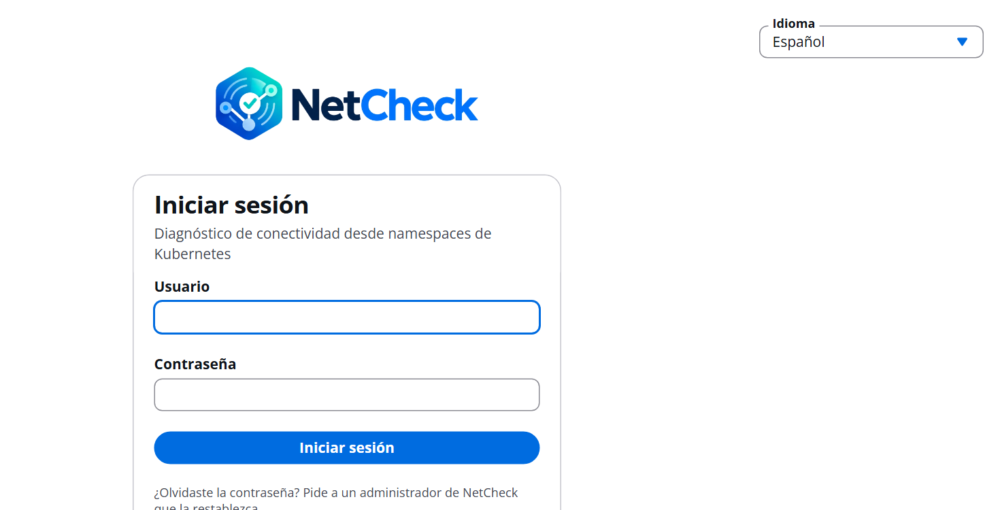
La primera vez que entras, o después de que un administrador restablezca tu contraseña, entras con una contraseña temporal. NetCheck te pide cambiarla antes de hacer cualquier otra cosa.
cafe-a-las-ocho-sin-azucar) es más
segura que una palabra corta con símbolos raros.Al instalar NetCheck se crea una cuenta admin con una contraseña aleatoria. El equipo de plataforma la obtiene del
clúster (capítulo 28) y te la entrega por un canal seguro. Con ella entras por primera vez, la cambias y a partir de ahí puedes
crear al resto de usuarios. Es buena práctica crear cuentas personales para cada administrador y no compartir la cuenta
admin.
NetCheck sigue la misma organización que la consola de AWS. Siempre verás estas partes:
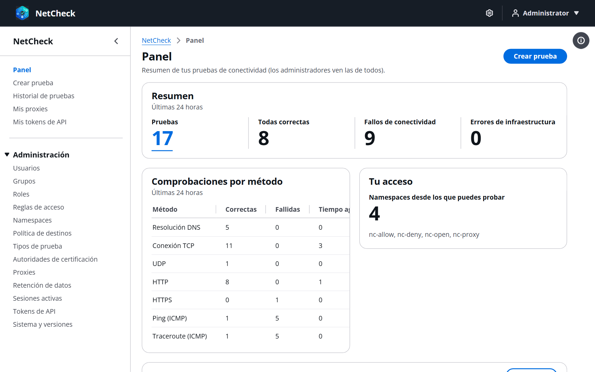
| Zona | Para qué sirve |
|---|---|
| Barra superior | El logo (vuelve al inicio), el botón de preferencias (rueda dentada) y tu nombre, que abre el menú de usuario. |
| Menú lateral | Panel, Crear prueba, Historial de pruebas, Mis proxies, Mis tokens de API y, si eres administrador, la sección Administración. Se puede plegar con la flecha ‹. |
| Ruta de navegación | La línea encima del título (por ejemplo NetCheck › Administración › Usuarios). Cada parte es un enlace para volver atrás. |
| Panel de ayuda | El icono ⓘ de la derecha, o el enlace Info junto a algunos títulos, abre un resumen de cómo leer los resultados. |
Pulsa tu nombre en la barra superior. La primera línea muestra tu usuario, tu rol y la versión de NetCheck. Debajo:
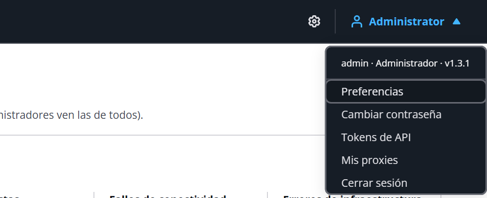
| Opción | Qué hace |
|---|---|
| Preferencias | Elegir el idioma de la interfaz. |
| Cambiar contraseña | Cambiar tu contraseña. No aparece en cuentas de SSO. |
| Tokens de API | Tus tokens para la línea de comandos (capítulo 10). |
| Mis proxies | Tus proxies personales (capítulo 11). Solo aparece si tu rol lo permite. |
| Cerrar sesión | Salir de NetCheck en este navegador. |
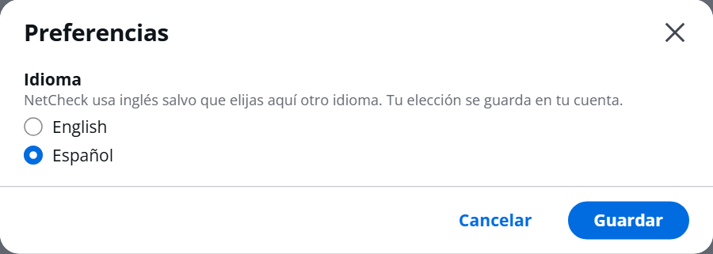
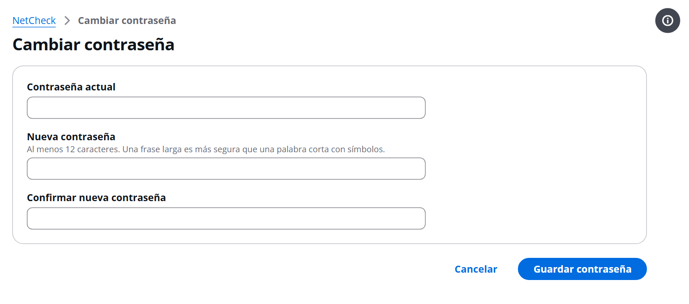
Casi todas las páginas muestran tablas con el mismo funcionamiento:
‹ 1 › pasan de página.El Panel es la página de inicio. Resume las pruebas de las últimas 24 horas. Un administrador ve las de todo el mundo; un usuario, solo las suyas (o las que su rol le deje ver).
| Bloque | Qué muestra |
|---|---|
| Resumen | Cuántas pruebas hubo y cuántas terminaron con Todas correctas, con Fallos de conectividad o con Errores de infraestructura (el significado de cada estado está en el capítulo 8). |
| Comprobaciones por método | Para cada tipo de prueba (DNS, TCP…), cuántas salieron bien, cuántas fallaron y cuántas se quedaron sin respuesta (tiempo agotado). |
| Tu acceso | Cuántos namespaces puedes usar y cuáles son. |
| Pruebas recientes | Las últimas pruebas. Pulsa la fecha para abrir el resultado o Ver todas para ir al historial. |
El botón Crear prueba de arriba a la derecha abre el formulario de una prueba nueva.
Lo que hace cualquier usuario: crear pruebas, entender los resultados y usar el historial, los tokens y los proxies personales. Como administrador lo necesitas para ayudar a los demás y para entender qué controlas desde la administración.
Pulsa Crear prueba en el menú lateral o en el panel. El formulario tiene varios bloques, que se rellenan de arriba abajo.
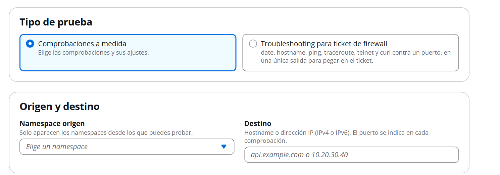
| Opción | Cuándo usarla |
|---|---|
| Comprobaciones a medida | Eliges tú qué comprobar y con qué ajustes. Es la opción por defecto y la más flexible. |
| Troubleshooting para ticket de firewall | Generas de una vez la salida que suele pedir el equipo de firewall. Se explica en el capítulo 7. |
api.payments.svc.cluster.local) o una dirección IP
(IPv4 o IPv6). No escribas https://, ni puertos, ni rutas: el puerto y la ruta se indican en cada comprobación.Marca una o varias tarjetas, o pulsa Seleccionar todas. Se ejecutan una detrás de otra en una sola sonda. Solo aparecen las comprobaciones que los administradores dejaron activadas y que tu rol permite en el namespace elegido. Si cambias de namespace y alguna deja de estar disponible, el formulario la quita y te lo dice.
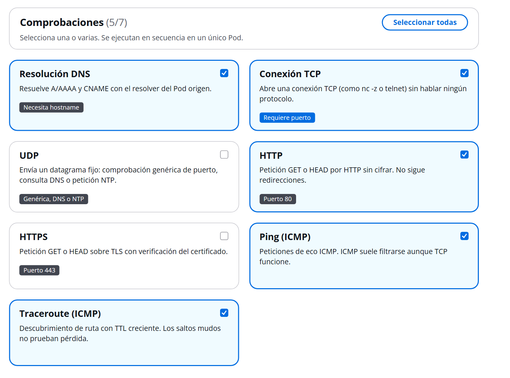
| Comprobación | Qué verifica | Puerto | Equivale a |
|---|---|---|---|
| Resolución DNS | Que el nombre se traduce a una IP desde el namespace. Necesita un nombre, no una IP. | — | getent ahosts |
| Conexión TCP | Que se puede abrir una conexión al puerto. | Obligatorio, sin valor por defecto | nc -z, telnet |
| UDP | Que un servicio UDP responde: puerto genérico, servidor DNS o servidor NTP. | Genérico: obligatorio; DNS 53; NTP 123 | nc -u, dig |
| HTTP | Que una web o API responde por HTTP sin cifrar. | 80 (editable) | curl http://… |
| HTTPS | Lo mismo, cifrado, verificando el certificado. | 443 (editable) | curl https://… |
| Ping (ICMP) | Que el destino responde al ping. | — | ping -c N |
| Traceroute (ICMP) | Los saltos por los que pasa el tráfico. | — | traceroute -I |
Al marcar una tarjeta aparecen sus ajustes en el bloque Ajustes de las comprobaciones:
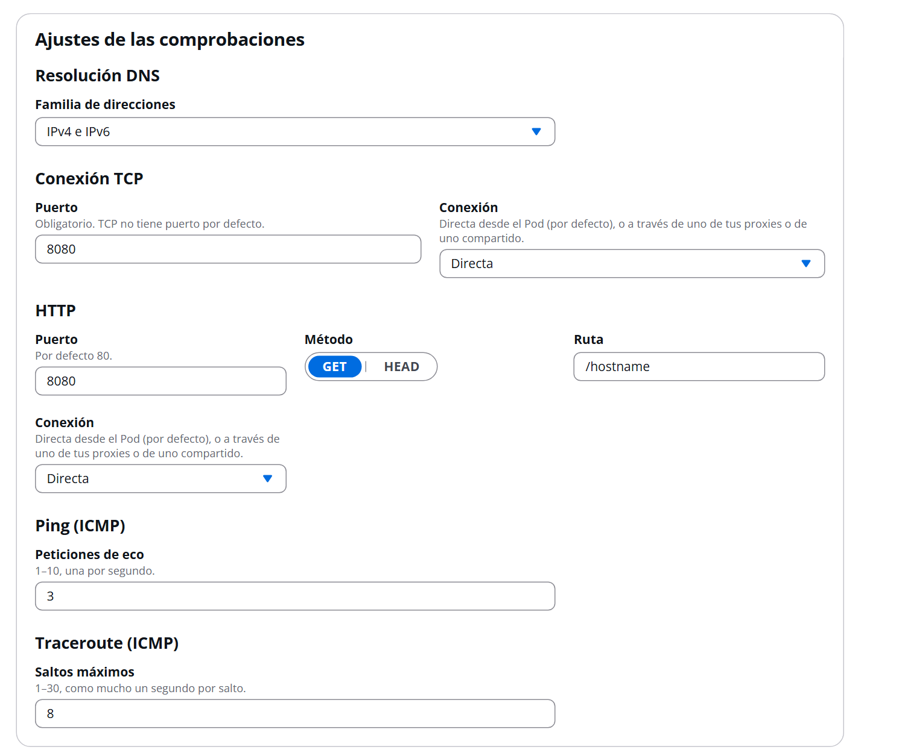
| Comprobación | Ajustes |
|---|---|
| Resolución DNS | Familia de direcciones: IPv4 e IPv6, solo IPv4 (A) o solo IPv6 (AAAA). |
| Conexión TCP | Puerto (obligatorio) y Conexión (directa o a través de un proxy, ver abajo). |
| UDP | Qué probar por UDP: Puerto genérico, Servidor DNS o Servidor NTP, y el puerto. |
| HTTP / HTTPS | Puerto, Método (GET o HEAD), Ruta (por ejemplo /health) y Conexión. Las redirecciones no se siguen: verás el código 3xx y adónde apunta. |
| HTTPS | Ignorar errores de certificado: la petición continúa aunque el certificado esté vencido, sea de otro nombre o lo firme una autoridad desconocida; el resultado lista cada problema como aviso (como curl --insecure). |
| Ping (ICMP) | Peticiones de eco: de 1 a 10, una por segundo. |
| Traceroute (ICMP) | Saltos máximos: de 1 a 30, como mucho un segundo por salto. |
UDP no establece conexión: la sonda envía un mensaje y el destino puede contestar o no. Por eso NetCheck solo ofrece lo que se puede probar con seguridad:
| Modo | Qué envía | Cómo se interpreta |
|---|---|---|
| Puerto genérico | Mensajes vacíos (hasta tres) | Respuesta = abierto. “Puerto inalcanzable” = cerrado (pero el equipo se alcanzó). Silencio = no concluyente. |
| Servidor DNS | Una consulta DNS estándar | Cualquier respuesta DNS, incluso un error, demuestra que el servidor es alcanzable. |
| Servidor NTP | Una petición de hora | Muestra el stratum del servidor y el desfase del reloj de la sonda. |
Si tú o los administradores tenéis proxies configurados, TCP, HTTP y HTTPS muestran el ajuste Conexión:
Úsalo cuando tus aplicaciones llegan al destino a través del proxy. Un éxito demuestra el camino por el proxy, no el directo.
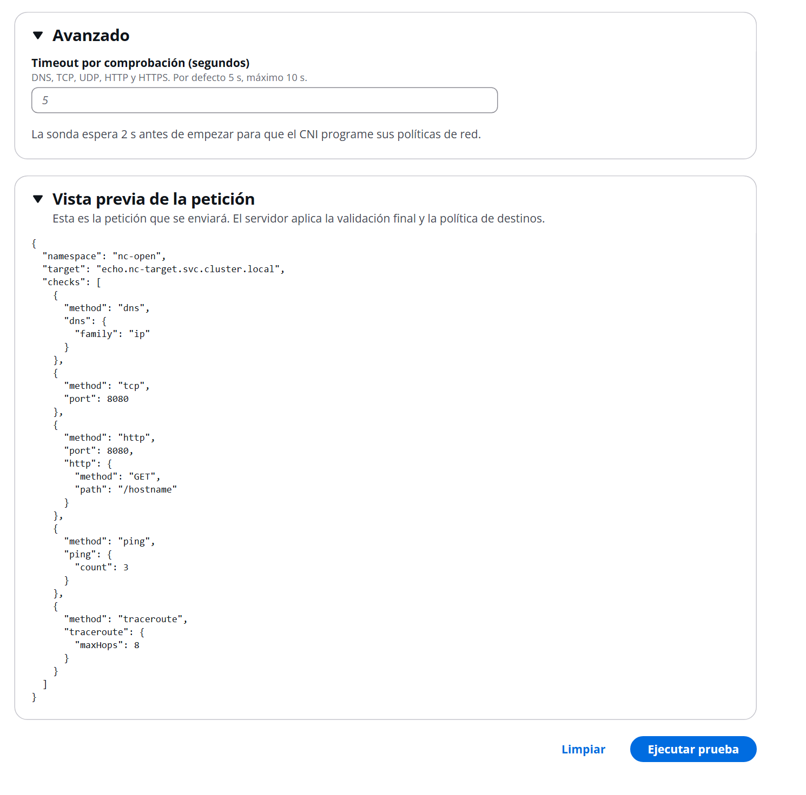
Cuando se abre un ticket al equipo de firewall, suelen pedir la salida de date, hostname, ping,
traceroute, telnet y curl contra el destino y el puerto, todo junto. NetCheck lo prepara en un clic.
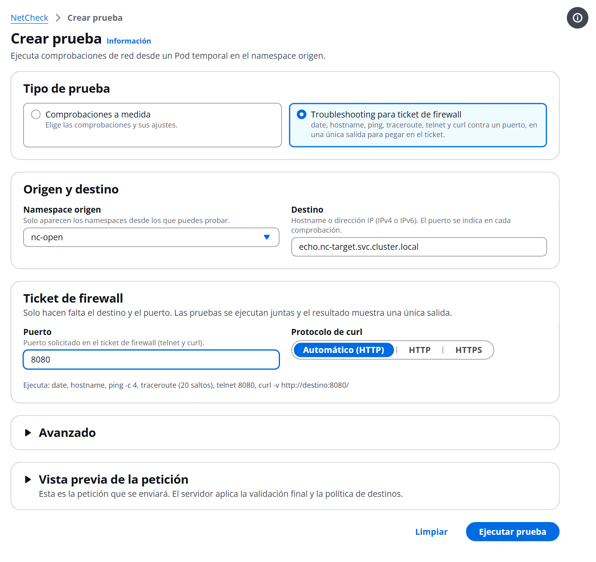
Una sola sonda ejecuta ping -c 4, traceroute (20 saltos), telnet <puerto> y
curl -v contra /, más date y hostname. El resultado incluye el bloque
Informe para el ticket de firewall con Copiar informe y
Descargar .txt para adjuntarlo:
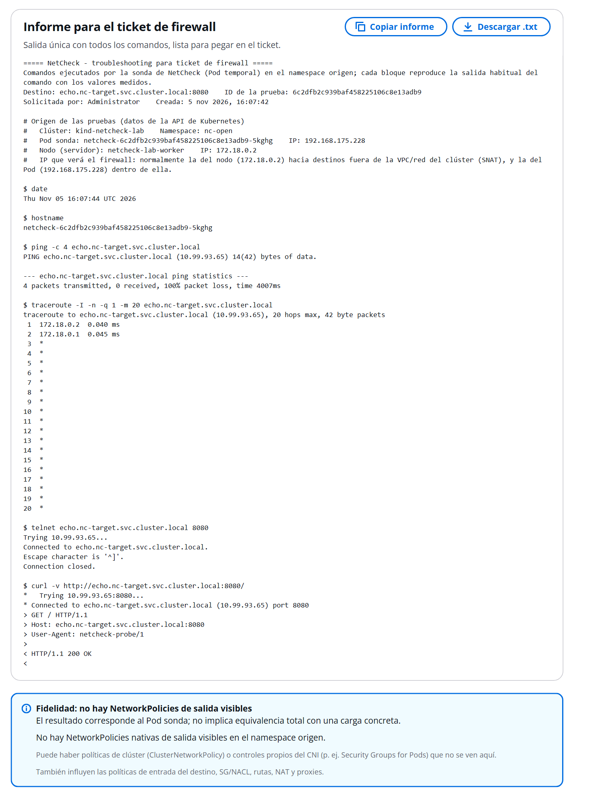
ifconfig: la sonda no tiene acceso a las interfaces del servidor, por diseño. La IP del nodo ya está en el bloque de origen.telnet y curl.La página del resultado tiene varios bloques. Arriba, Copiar JSON copia el resultado completo (útil para adjuntarlo a una incidencia) y Repetir prueba abre el formulario relleno con los mismos valores.
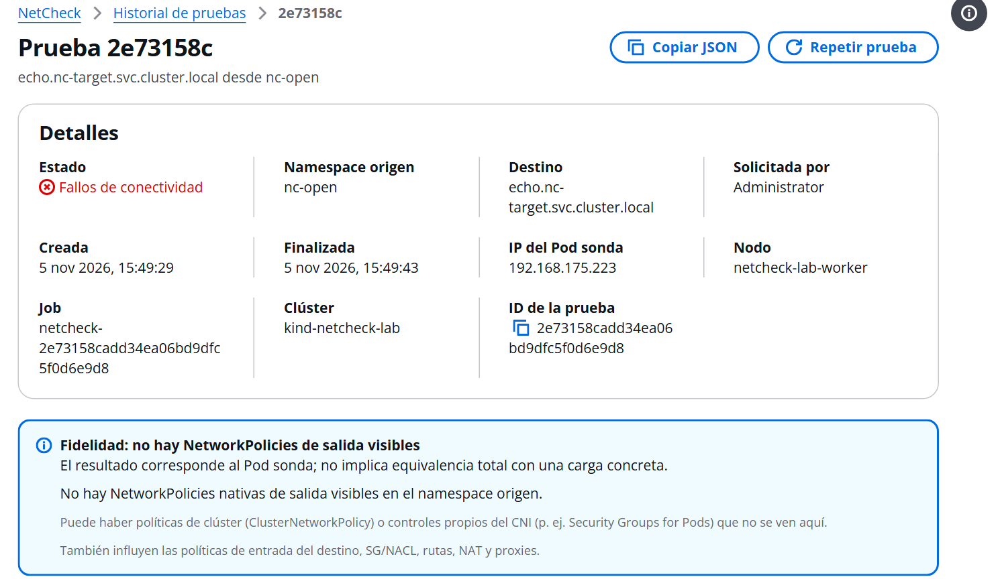
El bloque Detalles muestra el estado, el namespace, el destino, quién la pidió, las fechas, la IP del Pod sonda, el nodo, el nombre del Job, el clúster y el identificador de la prueba (con un botón para copiarlo).
| Estado | Qué significa |
|---|---|
| En cola / En ejecución | La sonda se está creando o está midiendo. |
| Todas correctas | Todas las comprobaciones salieron bien. |
| Fallos de conectividad | Al menos una comprobación de red falló (rechazada, sin respuesta, DNS, sin respuesta ICMP…). |
| Error de infraestructura | NetCheck no pudo ejecutar la sonda (permisos, cuota del namespace, imagen…). No es un resultado de red: avisa al equipo de plataforma con el identificador de la prueba. |
El resultado es el de la sonda, cuyas etiquetas e IP no son las de tu aplicación. El aviso indica cuánto se parece:
Siempre puede haber otras capas no visibles desde aquí: grupos de seguridad, políticas del lado del destino o firewalls.
El bloque Ruta dibuja por dónde va el tráfico y dónde se detiene, solo con datos medidos: el Pod sonda y su nodo, los saltos del traceroute (si lo incluiste) y el destino con el resultado de cada comprobación. Los saltos que no responden se agrupan; sin traceroute el tramo central aparece como no medido.
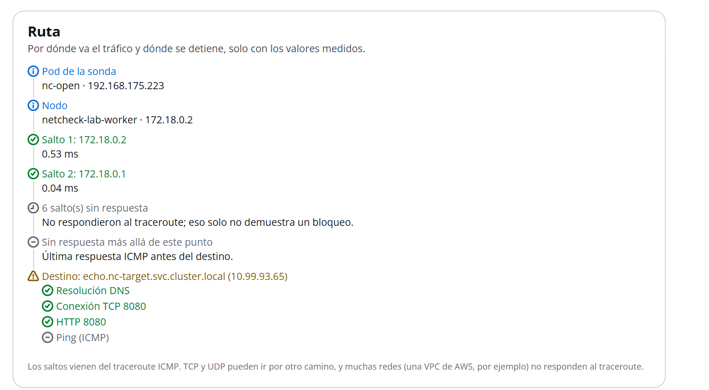
La tabla Comprobaciones tiene una fila por comprobación con su estado y un diagnóstico orientativo. Selecciona una fila para ver abajo su detalle, en pestañas:
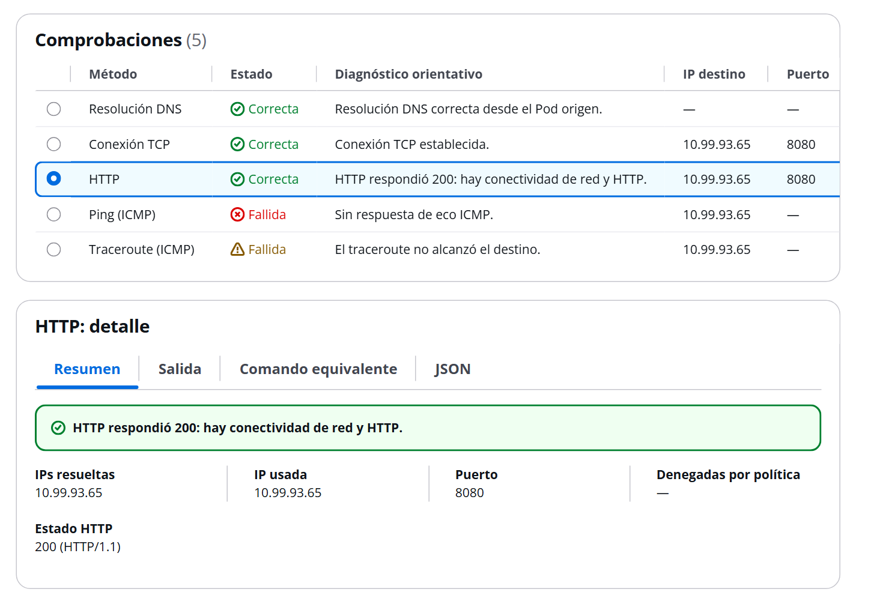
| Pestaña | Contenido |
|---|---|
| Resumen | Diagnóstico, IP resueltas, IP y puerto usados, IP denegadas por la política, código HTTP, versión TLS, certificado y tiempos (o las tablas de ping y traceroute). |
| Salida | La traza técnica de la sonda. |
| Comando equivalente | Un comando aproximado (getent, nc, curl, ping, traceroute) para reproducirlo a mano, con botón Copiar. La sonda no lo ejecuta. |
| JSON | El resultado completo de esa comprobación. |
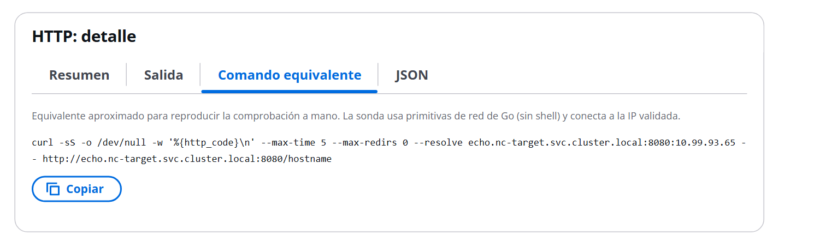
| Resultado | Qué significa | Qué NO significa |
|---|---|---|
| TCP correcto | Hay camino de red hasta ese puerto. | Que la aplicación funcione. |
| TCP conexión rechazada | El paquete llegó y algo respondió “no” (nada escucha en el puerto, o el Service no tiene destinos). | Un bloqueo de NetworkPolicy. |
| TCP tiempo agotado | Nadie respondió: puede ser una NetworkPolicy, un grupo de seguridad, una ACL, el enrutamiento o un destino caído. | Prueba de que lo bloquea una NetworkPolicy. |
| DNS NXDOMAIN | El nombre no existe para ese servidor DNS. | Un problema de red. |
| DNS tiempo agotado | No se pudo llegar al servidor DNS (¿política que bloquea el puerto 53?). | — |
| HTTP/HTTPS 200–299 | El servicio respondió bien. | — |
| HTTP/HTTPS 401, 403, 404, 5xx | Hay conectividad; el problema está en la aplicación. Se muestra como aviso. | Un problema de red. |
| TLS certificado no válido | Conectó, pero el certificado falló: vencido, de otro nombre, autoridad desconocida o autofirmado. | Un bloqueo de red. |
| HTTPS de confianza a través de una autoridad configurada en NetCheck | El certificado es válido gracias a una autoridad añadida en NetCheck (capítulos 20 y 21). | Que otros clientes lo acepten sin esa autoridad. |
| Por proxy: proxy inalcanzable | El bloqueo está entre el Pod y el proxy. | Un bloqueo hacia el destino. |
| Por proxy: 403 / 407 | El proxy respondió: su política no lo permite o exige autenticación. | Un bloqueo de red. |
| Por proxy: 502 / 503 / 504 | El Pod llega al proxy; el problema está más allá. | Que el camino Pod-proxy esté bloqueado. |
| UDP sin respuesta | No concluyente: abierto pero callado, o filtrado. | Un bloqueo. |
| Ping sin respuesta | No llegó respuesta al ping. | Que TCP esté bloqueado: el ping se filtra a menudo. |
| Traceroute incompleto | No se alcanzó el destino; los * no respondieron. | Pérdida de paquetes. |
| Destino denegado | La política de NetCheck no permite ese destino; no se envió tráfico. | Un resultado de red. |
Toda prueba terminada acaba con el bloque Qué falta, que dice qué hay que cambiar, si es que hay algo:
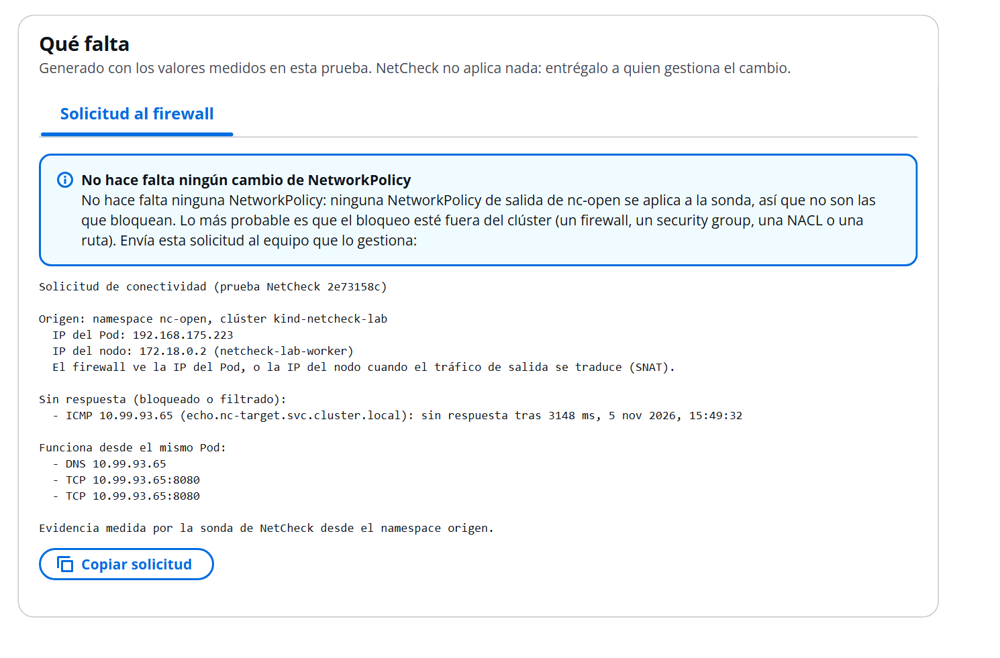
| Situación | Qué dice el bloque |
|---|---|
| Todas las comprobaciones obtuvieron respuesta | No falta nada. No hay que cambiar reglas de red; los errores con respuesta (rechazo, TLS, código HTTP) vienen del destino. |
| Hubo comprobaciones sin respuesta y al namespace le aplican NetworkPolicies de salida | Probablemente hace falta un cambio de NetworkPolicy, con una propuesta en YAML construida con las IP, puertos y protocolos medidos (pestaña NetworkPolicy sugerida). |
| Hubo comprobaciones sin respuesta y no aplica ninguna NetworkPolicy de salida | No hace falta ningún cambio de NetworkPolicy: el bloqueo está casi seguro fuera del clúster. |
En los casos bloqueados, la pestaña Solicitud al firewall trae un texto listo para copiar con el origen, las IP del Pod y del nodo, lo que no respondió y lo que sí funciona desde el mismo Pod. NetCheck nunca aplica nada: lo propone a quien debe hacer el cambio.
Historial de pruebas lista las pruebas, de la más reciente a la más antigua.
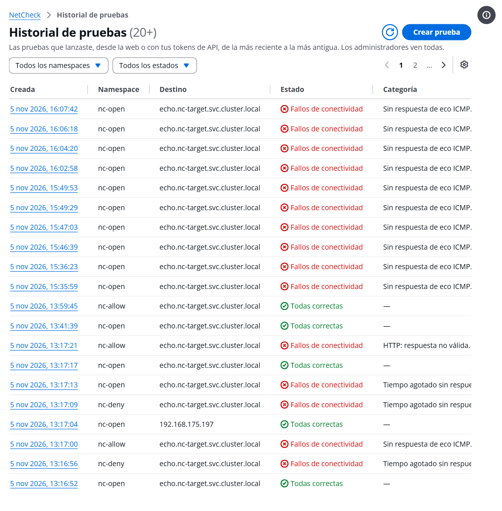
| Quién | Qué pruebas ve |
|---|---|
| Administrador | Todas, de todos los usuarios y namespaces. |
| Usuario (rol de serie) | Solo las que lanzó él, desde la web o con sus tokens. Las de otros no aparecen y sus enlaces responden “no encontrado”, aunque compartan namespace. |
| Rol con Todas las pruebas de sus namespaces | Las suyas y todas las de los namespaces que puede usar. |
| Rol con Las pruebas de quienes comparten un grupo | Las suyas y las de las personas de sus grupos, solo en sus namespaces. |
La salida técnica se guarda 15 días y el resto 45 días por defecto. Los administradores pueden cambiarlo (capítulo 22).
Un token de API permite que un programa, como un pipeline de despliegue, lance pruebas en tu nombre con la
herramienta netcheck-cli. Actúa con tus permisos (tus namespaces y la política de destinos), pero solo puede lanzar
y leer pruebas: no puede gestionar usuarios ni configuración.
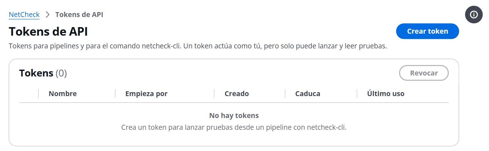
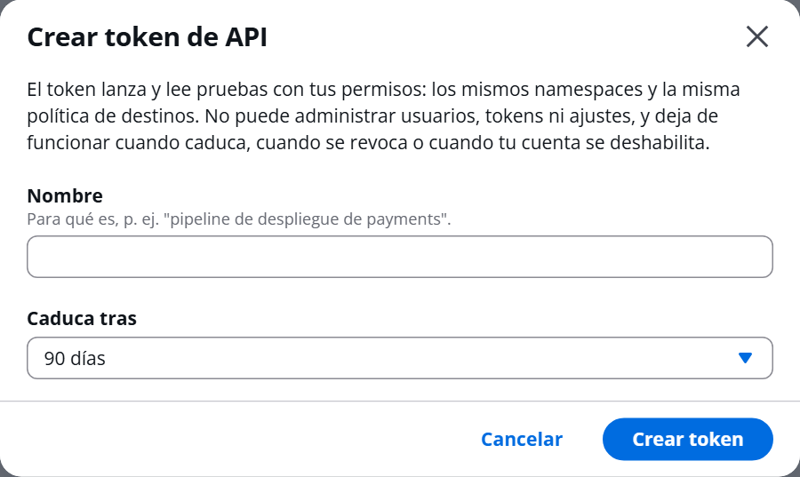
La tabla muestra el nombre, cómo empieza el token, cuándo se creó, cuándo caduca y su último uso. Para dejar de usar uno, selecciónalo y pulsa Revocar: deja de funcionar en el acto. El botón de crear tokens solo aparece si tu rol lo permite.
export NETCHECK_URL=https://netcheck.tuempresa.com export NETCHECK_TOKEN=nck_... netcheck-cli run -n payments -t db.corp.example -c dns -c tcp:5432
netcheck-cli lanza la prueba, espera el resultado y termina con un código: 0 todo correcto, 1
fallos de conectividad, 2 la prueba no pudo ejecutarse, 3 error de uso o de la API (por ejemplo, un tipo de
prueba desactivado o no permitido por tu rol).
Mis proxies guarda proxies personales: solo tú los ves y los usas. Ni siquiera los administradores ven su nombre ni su dirección; si abren una prueba tuya, solo ven “Proxy personal de <usuario>”. La página solo aparece si tu rol lo permite.
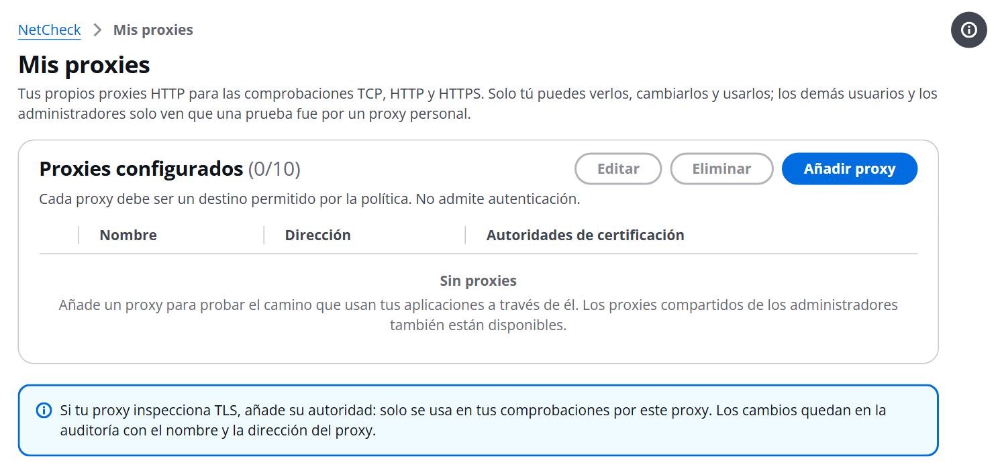
corp).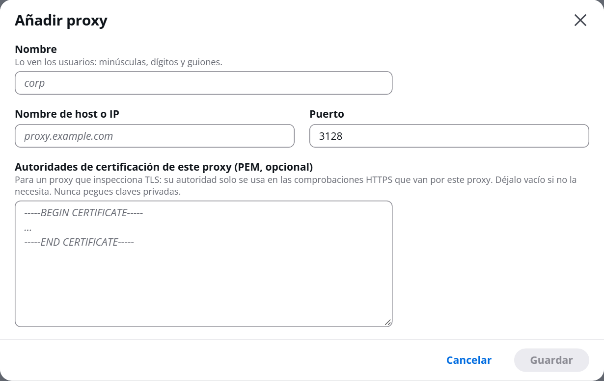
Cada página del menú Administración, opción por opción: para qué sirve, cómo se usa y qué conviene tener en cuenta.
Los administradores ven en el menú lateral la sección Administración. Cada página controla una parte de NetCheck y los cambios se aplican al momento, sin reinstalar nada.
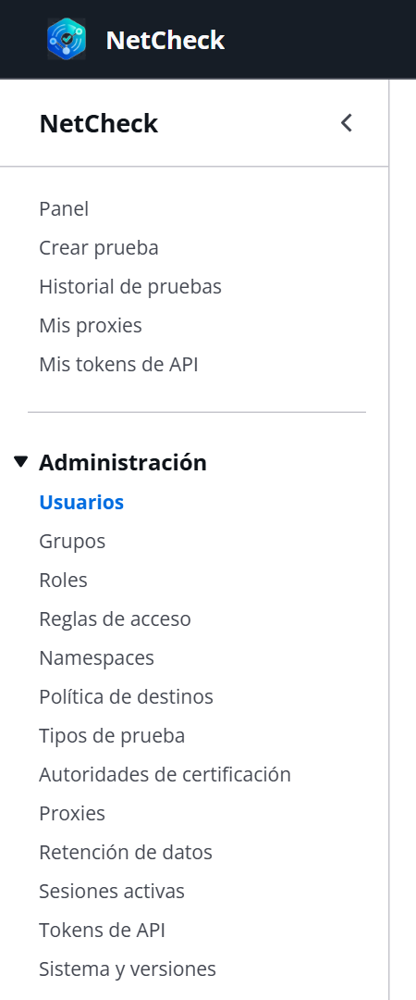
| Página | Para qué sirve | Cap. |
|---|---|---|
| Usuarios | Cuentas, contraseñas, estado | 13 |
| Grupos | Dar un rol a varias personas | 14 |
| Roles | Qué permite cada rol | 15 |
| Reglas de acceso | Quién entra con SSO | 16 |
| Namespaces | Desde dónde se puede probar | 17 |
| Política de destinos | Hacia dónde se puede probar | 18 |
| Tipos de prueba | Qué pruebas existen | 19 |
| Autoridades de certificación | Certificados de confianza | 20 |
| Proxies | Proxies compartidos | 21 |
| Retención de datos | Cuánto se guarda | 22 |
| Sesiones activas | Quién está conectado | 23 |
| Tokens de API | Los tokens de todos | 24 |
| Sistema y versiones | Versión y ajustes | 25 |
| Puede… | Usuario | Administrador |
|---|---|---|
| Entrar, elegir idioma y cambiar su contraseña | ✔ | ✔ |
| Lanzar pruebas | En sus namespaces | En todos los disponibles |
| Ver el panel y el historial | Solo sus pruebas* | Todas |
| Tener proxies personales y crear tokens de API | ✔ | ✔ |
| Gestionar usuarios, grupos, roles y reglas de acceso | — | ✔ |
| Namespaces, política de destinos, tipos de prueba, autoridades, proxies compartidos, retención, sesiones, tokens de todos, sistema | —* | ✔ |
* Un rol personalizado puede ampliar lo que ve una persona o darle algunas páginas de administración (capítulo 15). Usuarios, grupos, roles y reglas de acceso quedan siempre solo para el rol Administrador.
kube-system, kube-public, kube-node-lease y default) no están disponibles nunca.Es la parte que más dudas genera, así que vale la pena verla con calma antes de empezar:
| Pieza | Responde a… | Quién mantiene la lista de personas |
|---|---|---|
| Rol | ¿Qué se puede hacer? (qué pruebas, qué historial, proxies, tokens, partes de la administración) | — |
| Usuario | La cuenta concreta: su estado (habilitada o no), su propio rol y sus namespaces | NetCheck (tú) |
| Grupo local | Dar un rol en unos namespaces a varias cuentas a la vez; también define “mi equipo” para ver sus pruebas | NetCheck (tú añades y quitas miembros) |
| Regla de acceso | Quién de SSO puede entrar y con qué rol, según su grupo en el proveedor de identidad | El proveedor de identidad (Entra ID, Okta, GitHub…) |
Una persona puede recibir permisos por varios caminos a la vez. Se suman por namespace y el resultado, con su origen, se ve en Permisos efectivos (13.5). Deshabilitar una cuenta gana a todo.
Administración › Usuarios lista todas las cuentas:
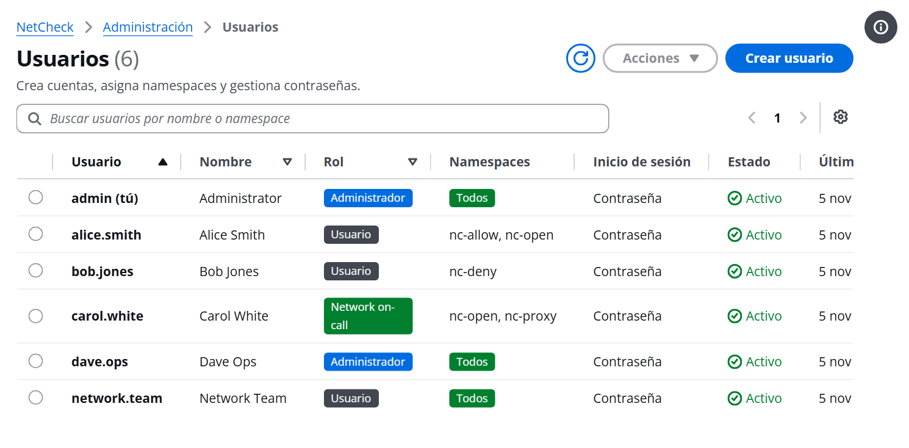
| Columna | Qué muestra |
|---|---|
| Usuario | El nombre para entrar. El tuyo lleva (tú). |
| Nombre | El nombre visible, que aparece en el historial. |
| Rol | Administrador (azul), Usuario (gris) o un rol personalizado (verde). |
| Namespaces | Los que puede usar. Todos significa todos, incluidos los que se creen después. La etiqueta NetCheck indica que puede usar el namespace de NetCheck. |
| Inicio de sesión | Contraseña (cuenta local de NetCheck) o SSO (inicio de sesión único). |
| Estado | Ver la tabla siguiente. |
| Último acceso | Cuándo entró por última vez. |
| Estado | Qué significa |
|---|---|
| Activo | Puede entrar. |
| Contraseña temporal | Debe cambiar la contraseña en su próximo acceso. |
| Bloqueado | Demasiados intentos fallidos. Se desbloquea solo a los 15 minutos o con Desbloquear. |
| Deshabilitado | No puede entrar; sus sesiones se cerraron y sus tokens no funcionan. |
El cuadro de búsqueda filtra por usuario, nombre o namespace. Para actuar sobre una cuenta, selecciónala con el círculo de la izquierda y abre Acciones:
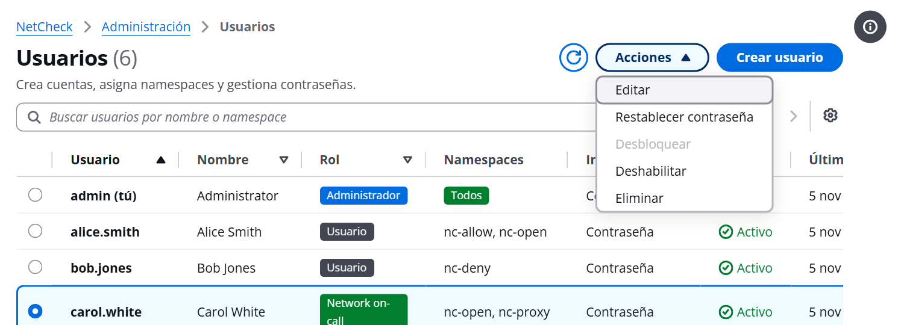
| Acción | Qué hace | Sección |
|---|---|---|
| Editar | Cambiar nombre visible, estado, rol y namespaces, y ver sus permisos efectivos. | 13.2 |
| Restablecer contraseña | Darle una contraseña temporal nueva. No aplica a cuentas SSO. | 13.6 |
| Desbloquear | Quitar el bloqueo por intentos fallidos. Solo activo si la cuenta está bloqueada. | 13.7 |
| Deshabilitar / Habilitar | Cortar o devolver el acceso sin borrar la cuenta. | 13.8 |
| Eliminar | Borrar la cuenta para siempre. | 13.9 |
., _ o - (por ejemplo maria.lopez). No se puede cambiar después.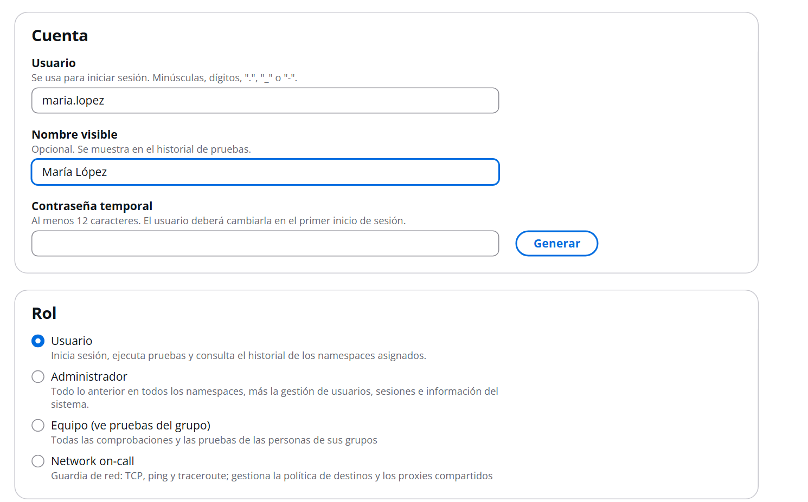
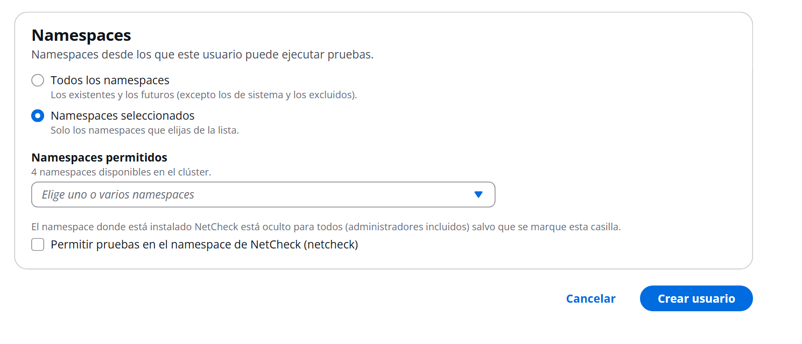
Si el usuario ya existe, la contraseña es demasiado corta o no elegiste namespaces, el formulario muestra el error junto al campo.
Acciones › Editar abre la ficha de la cuenta. El nombre de usuario no se puede cambiar; todo lo demás sí:
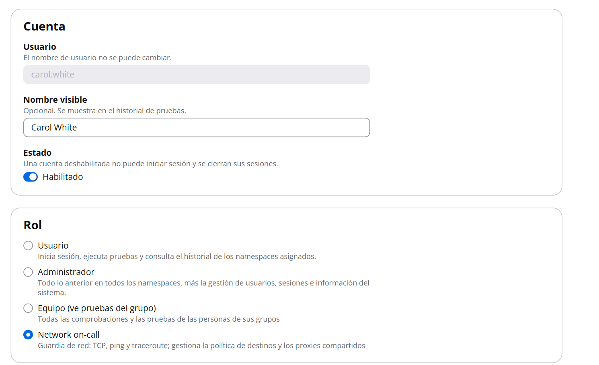
Pulsa Guardar al final de la página. Los cambios se aplican al momento.
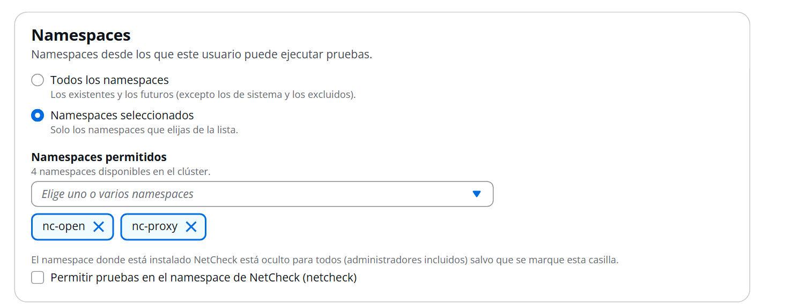
| Opción | Qué significa |
|---|---|
| Todos los namespaces | Acceso dinámico a todos los namespaces que existen y a los que se creen después, salvo los del sistema, los excluidos y el de NetCheck. Un namespace nuevo le aparece en menos de un minuto. |
| Namespaces seleccionados | Solo los que elijas en la lista (leída del clúster en directo, con buscador). Aunque se creen más, no los verá. |
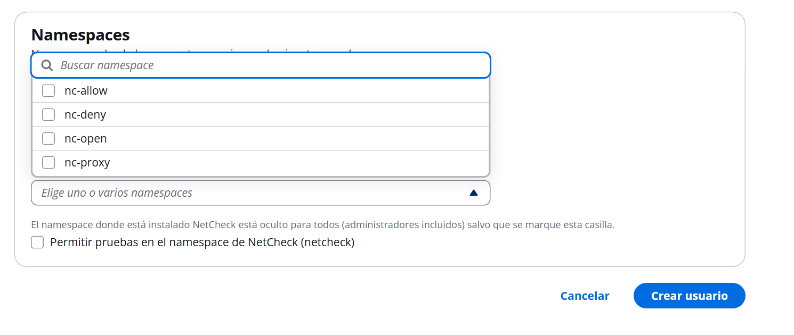
Si un namespace elegido desaparece del clúster o se excluye, aparece marcado como Ya no está disponible.
La casilla Permitir pruebas en el namespace de NetCheck (netcheck) está desmarcada por defecto y vale para cualquier rol. Márcala solo para quien deba diagnosticar la propia red de NetCheck (por ejemplo, el equipo de plataforma). Una cuenta puede tener solo esta casilla y ningún otro namespace.
Al final de la ficha de cada usuario, Permisos efectivos muestra lo que esa persona puede hacer ahora y de dónde le viene. Úsalo para responder a “¿por qué no puedo…?”.
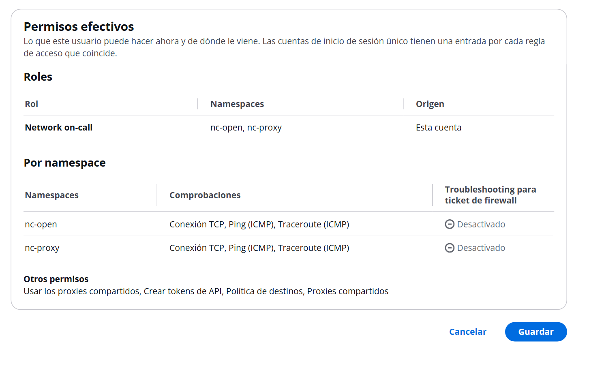
| Bloque | Qué muestra |
|---|---|
| Roles | Cada rol que tiene, en qué namespaces y su origen: Esta cuenta, Grupo … (grupo local) o Regla de acceso del grupo / del usuario … (SSO). |
| Por namespace | Qué comprobaciones puede lanzar en cada namespace y si puede usar el ticket de firewall. |
| Otros permisos | Proxies, tokens, historial ampliado y páginas de administración. |
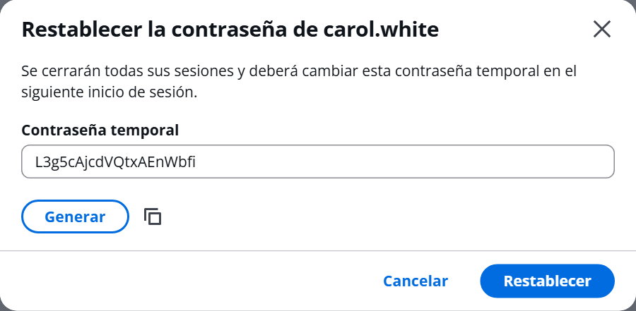
Al confirmar se cierran todas las sesiones de esa persona, que deberá cambiar la contraseña al entrar. También quita un bloqueo.
Tras 5 intentos fallidos seguidos la cuenta se bloquea 15 minutos (ambos valores se pueden cambiar en la instalación). Acciones › Desbloquear quita el bloqueo al momento. La opción solo está activa si la cuenta está bloqueada.
Deshabilitar corta el acceso sin borrar la cuenta. Es la forma correcta de quitar el acceso temporalmente, y la única que funciona de verdad con cuentas de SSO.
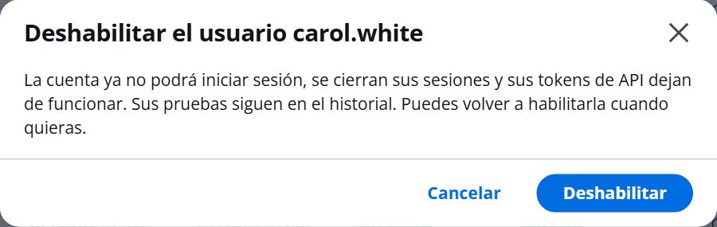
Acciones › Eliminar borra la cuenta para siempre, con sus sesiones, tokens de API y proxies personales. El historial de pruebas que creó se conserva con su nombre.
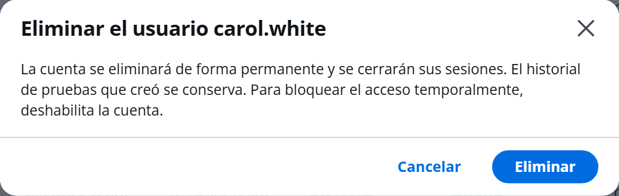
Administración › Grupos da un rol, con sus namespaces, a varias personas a la vez. Es
ideal para equipos: “el equipo de pagos puede probar desde payments y ver las pruebas de todo el equipo”.
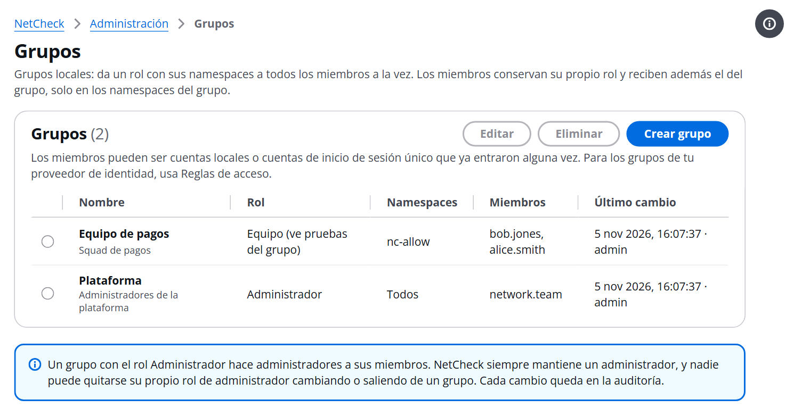
La tabla muestra el nombre y la descripción, el rol, los namespaces, los miembros y el último cambio.
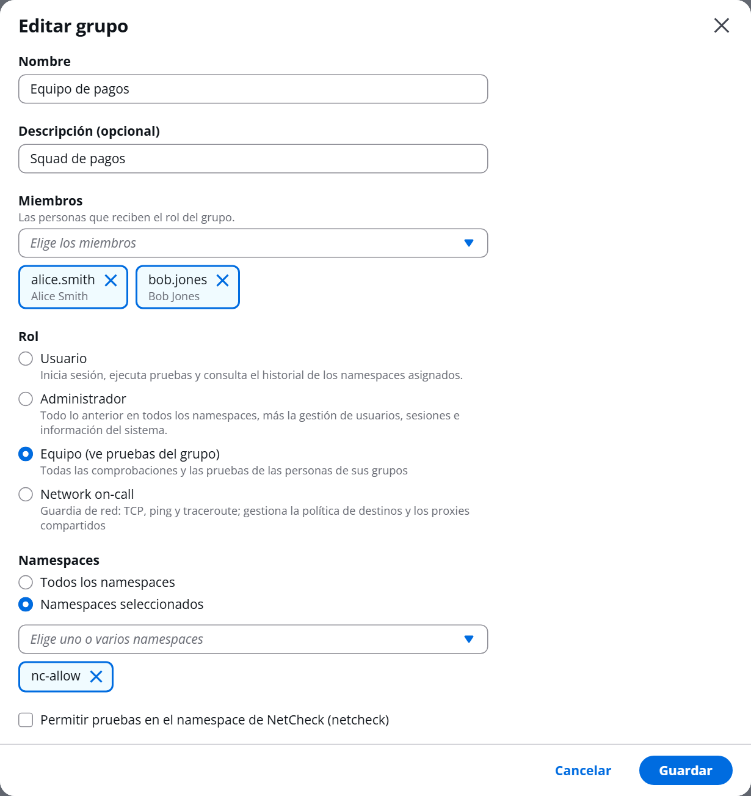
Si el rol del grupo tiene el permiso Las pruebas de quienes comparten un grupo, en sus namespaces, sus miembros ven además de las suyas las pruebas de los compañeros de grupo, solo en los namespaces que ellos mismos pueden usar. Los proxies personales siguen siendo privados: los demás solo ven Proxy personal de ….
Selecciónalo y pulsa Eliminar. Sus miembros pierden lo que el grupo les daba; su propio rol se mantiene. Todos los cambios de grupos quedan en la auditoría, con sus miembros.
Administración › Roles define qué permite cada rol. Usuario y Administrador vienen de serie y no se pueden cambiar. Puedes crear roles personalizados para dar exactamente los permisos necesarios.
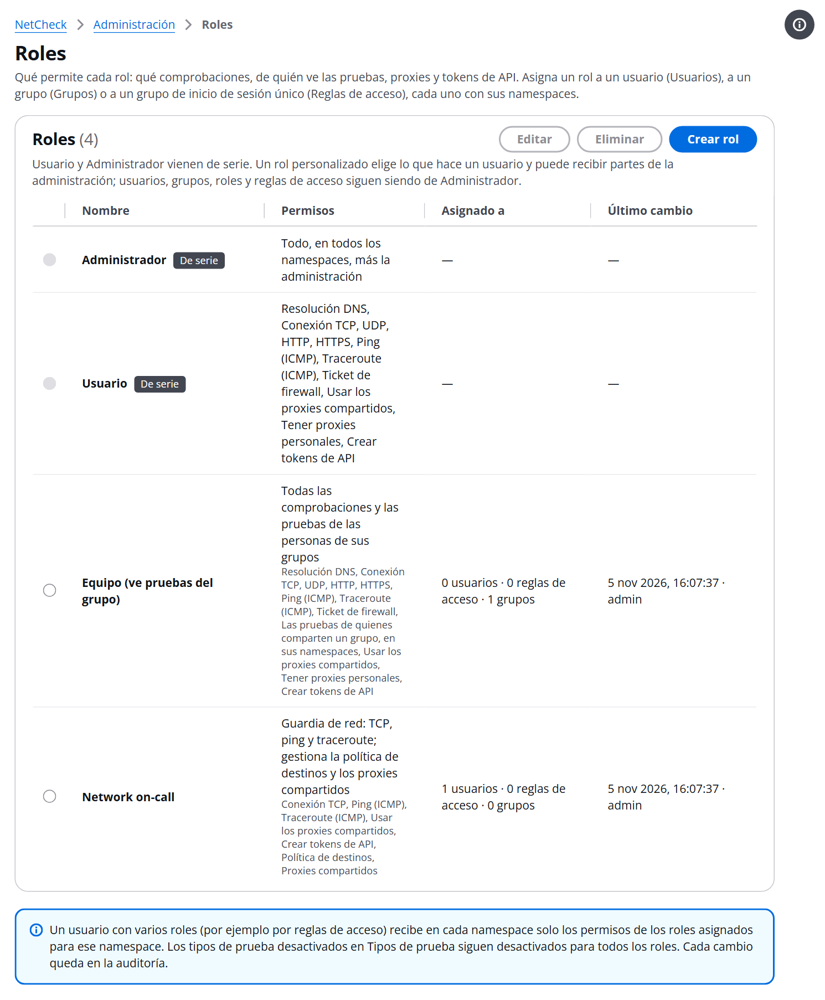
La columna Asignado a dice cuántos usuarios, reglas de acceso y grupos tienen cada rol.
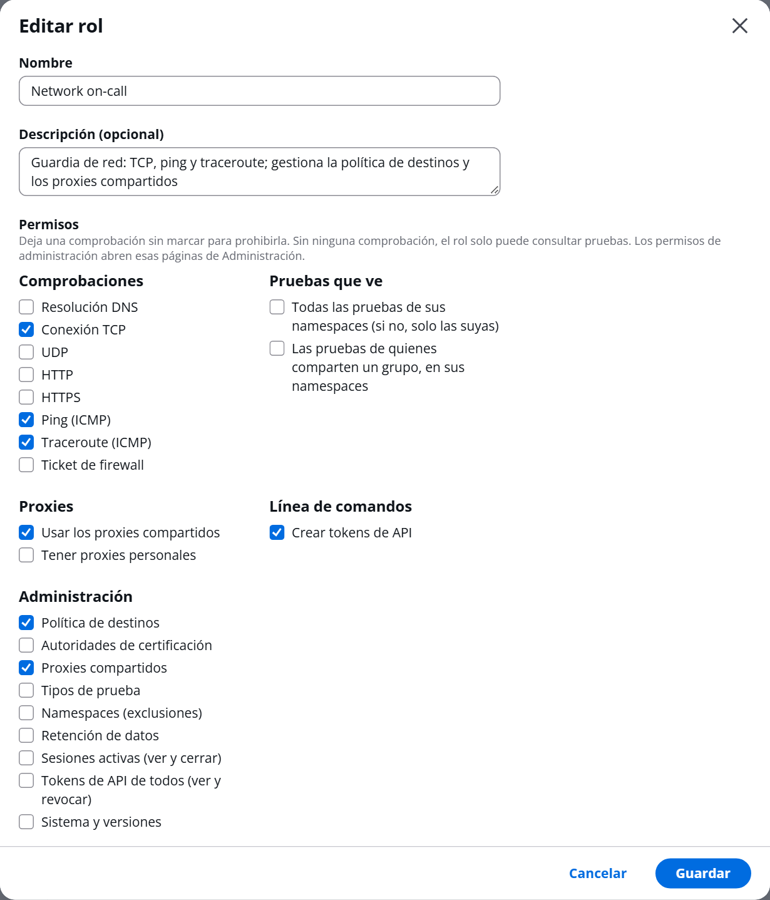
| Grupo | Permiso | Qué permite |
|---|---|---|
| Comprobaciones | Resolución DNS | Lanzar ese tipo de comprobación. Sin ninguna marcada, el rol solo puede consultar pruebas. |
| Conexión TCP | ||
| UDP | ||
| HTTP | ||
| HTTPS | ||
| Ping (ICMP) | ||
| Traceroute (ICMP) | ||
| Ticket de firewall | Usar el modo de troubleshooting para ticket de firewall. | |
| Pruebas que ve | Todas las pruebas de sus namespaces | Ver todas las pruebas de los namespaces que puede usar, no solo las suyas. |
| Las pruebas de quienes comparten un grupo | Ver las pruebas de sus compañeros de grupo, en sus namespaces. | |
| Proxies | Usar los proxies compartidos | Elegir en las pruebas los proxies que comparten los administradores. |
| Tener proxies personales | Ver la página Mis proxies y usar sus propios proxies. | |
| Línea de comandos | Crear tokens de API | Crear tokens para netcheck-cli. |
| Administración | Política de destinos | Ver y cambiar esa página de administración. Quien tiene alguno de estos permisos ve en Administración solo esas páginas. |
| Autoridades de certificación | ||
| Proxies compartidos | ||
| Tipos de prueba | ||
| Namespaces (exclusiones) | ||
| Retención de datos | ||
| Sesiones activas (ver y cerrar) | ||
| Tokens de API de todos (ver y revocar) | ||
| Sistema y versiones |
El rol de serie Usuario tiene todos los permisos salvo ver las pruebas de otros y la administración.
Un rol con permisos de administración permite repartir el trabajo sin dar el control total. Por ejemplo, un rol “Equipo de red” con Política de destinos y Proxies compartidos verá en el menú solo esas dos páginas.
Un rol se puede dar de tres formas, cada una con sus namespaces:
En cada namespace, una persona tiene los permisos de los roles que se le dieron para ese namespace.
Ejemplo: “Guardia de red en orders” más “Usuario en payments” permite en orders solo las pruebas
de la guardia. Los tipos de prueba desactivados en Tipos de prueba siguen desactivados sea cual sea el rol.
netcheck-cli y los tokens responden 403 check_not_allowed indicando la comprobación.Selecciónalo y pulsa Eliminar. Un rol asignado a alguien (usuarios, grupos o reglas) no se puede eliminar: el aviso dice a cuántos está asignado. Primero dales otro rol. Los roles se gestionan solo desde la web y todos los cambios quedan en la auditoría.
Con el inicio de sesión único activado, Administración › Reglas de acceso decide quién puede entrar con el proveedor de identidad y con qué permisos, antes de que entre por primera vez. Sin al menos una regla que le aplique, nadie puede entrar con SSO.
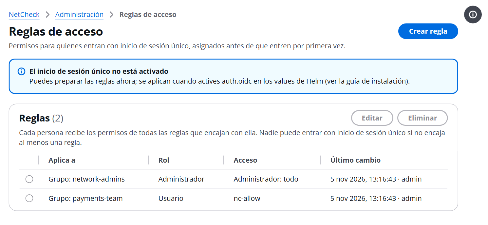
acme:payments-team para un equipo de GitHub). Escríbelo exactamente como lo envía el proveedor; no distingue mayúsculas.ana@example.com).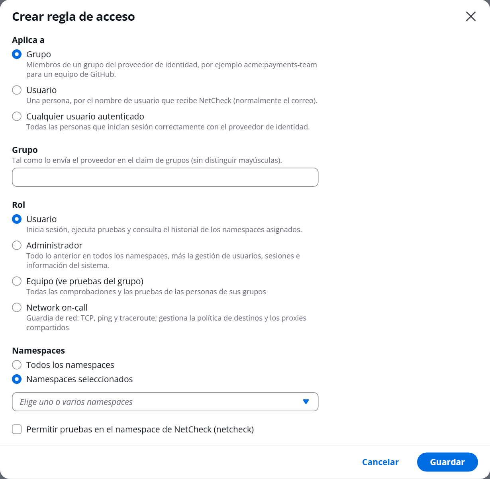
Administración › Namespaces lista todos los namespaces del clúster y si se pueden usar para lanzar pruebas. Desde aquí puedes excluir cualquiera, con efecto inmediato.
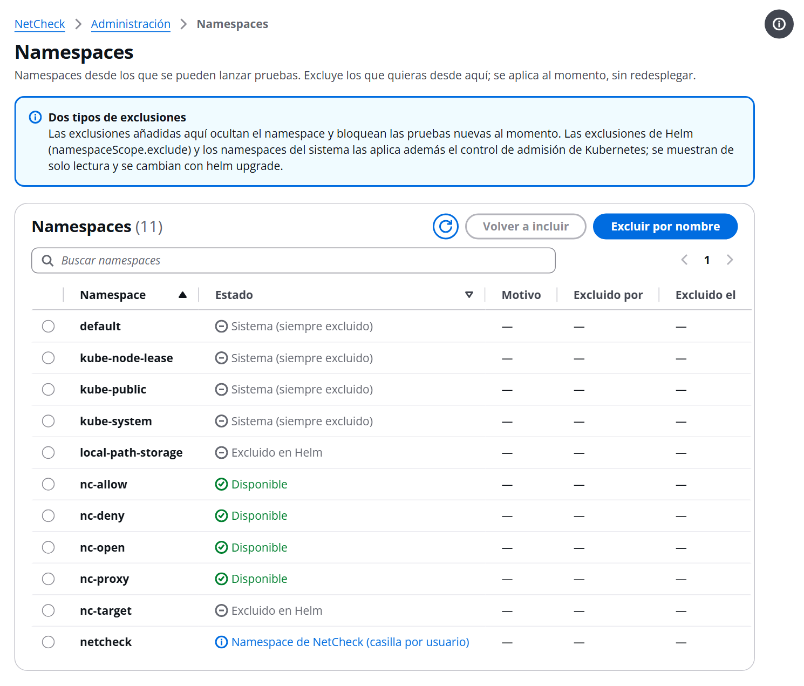
| Estado | Qué significa | ¿Se cambia desde la web? |
|---|---|---|
| Disponible | Se pueden lanzar pruebas (según los namespaces de cada usuario). | Sí: Excluir |
| Excluido en la web | Un administrador lo excluyó aquí; se ve quién, cuándo y por qué. | Sí: Volver a incluir |
| Excluido en Helm | Excluido en la instalación. | No: con Helm |
| Sistema (siempre excluido) | default, kube-system, kube-public, kube-node-lease. | No, nunca |
| Namespace de NetCheck | Solo para cuentas con la casilla correspondiente. | En cada cuenta |
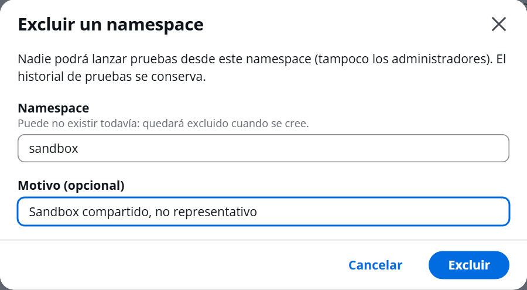
Si la instalación usa el modo de lista fija de namespaces, solo se muestran los configurados en Helm y lo indica un aviso.
Administración › Política de destinos decide hacia dónde se puede probar: nombres, redes y puertos. Los cambios se aplican a la siguiente prueba, sin reiniciar nada. La cabecera dice quién hizo el último cambio y cuándo.
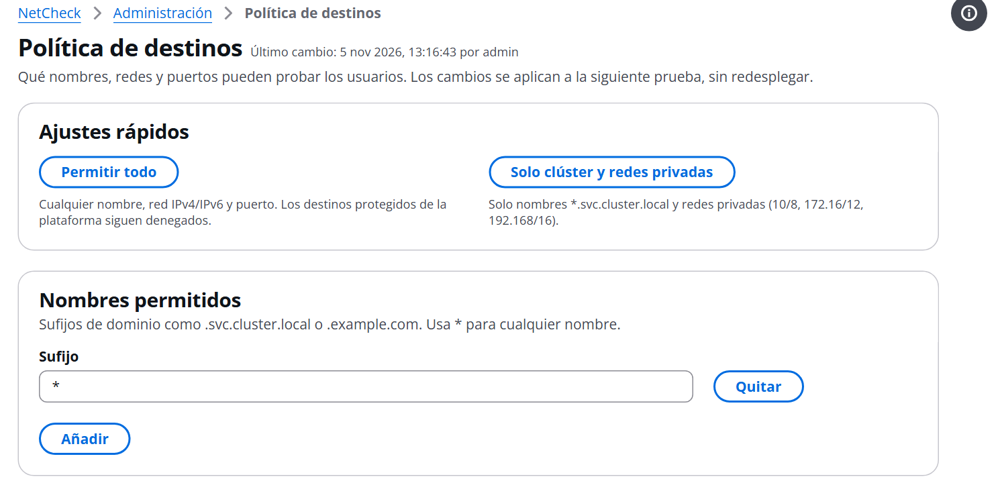
| Bloque | Qué controla |
|---|---|
| Ajustes rápidos | Permitir todo (cualquier nombre, red y puerto) o Solo clúster y redes privadas (nombres *.svc.cluster.local y redes 10/8, 172.16/12, 192.168/16). Solo rellenan el formulario: nada cambia hasta pulsar Guardar. |
| Nombres permitidos | Sufijos de dominio (.svc.cluster.local, .corp.example.com). * permite cualquier nombre. |
| Redes permitidas | Rangos IPv4/IPv6 en formato CIDR. Cada IP resuelta debe estar en uno de ellos; 0.0.0.0/0 y ::/0 permiten cualquier dirección. |
| Puertos permitidos | Rangos Desde–Hasta para TCP, UDP, HTTP y HTTPS. Ping y traceroute no usan puerto. |
| Redes denegadas | Siempre denegadas, aunque estén dentro de una red permitida (por ejemplo, una subred sensible). |
| Protecciones de la plataforma | Metadatos de la nube, la API de Kubernetes, loopback, link-local, multicast y rangos reservados. Se fijan en la instalación y no se pueden quitar desde la web. |
| Comprobar un destino | Dice si un nombre o una IP (y puerto) está permitido sin enviar tráfico. |
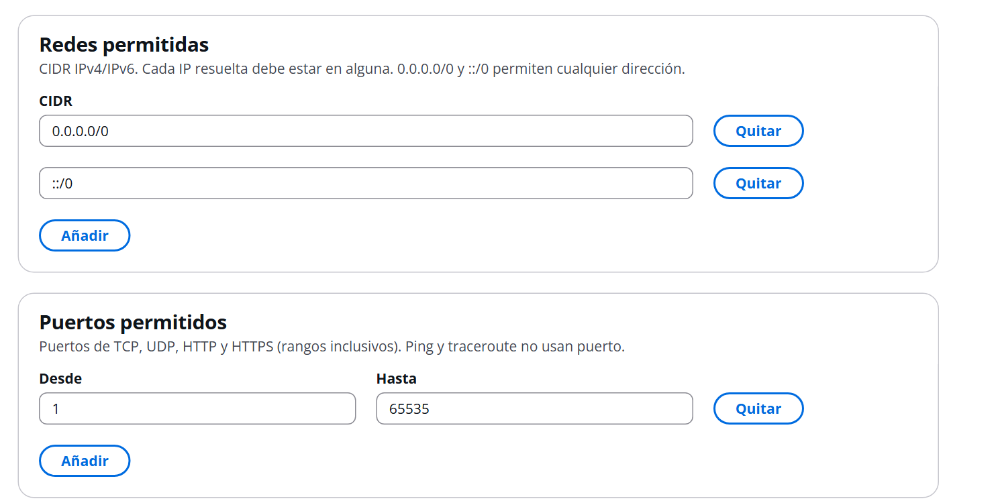
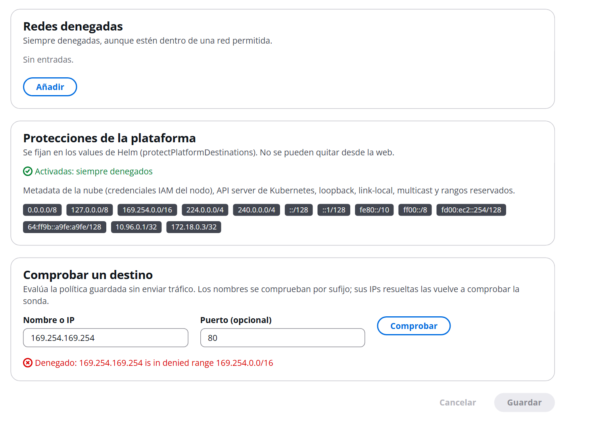
Para un nombre se comprueba el sufijo; la sonda vuelve a comprobar las IP a las que resuelve antes de conectar. La comprobación usa la política guardada, no los cambios pendientes.
NetCheck lee del clúster las direcciones exactas del servidor de la API de Kubernetes y las renueva cada 30 segundos. Hasta leerlas, muestra en su lugar los rangos configurados en la instalación, que suelen ser subredes enteras. Si siguen apareciendo un minuto después del arranque, NetCheck no puede leer esas direcciones: el registro del Pod explica por qué y el equipo de plataforma debe corregirlo.
Los valores de Helm solo son la política inicial; después manda lo que guardes aquí. Si la instalación usa
destinationsManagedBy: helm, la página aparece en solo lectura con el aviso “Gestionada en Helm”,
y los cambios se hacen en los valores de Helm. Las pruebas que ya estaban en marcha mantienen la política con la que se crearon.
Administración › Tipos de prueba activa o desactiva cada tipo de prueba para todo el mundo, administradores incluidos: DNS, TCP, UDP, HTTP, HTTPS, ping, traceroute y el modo de ticket de firewall. Todo está activado por defecto.
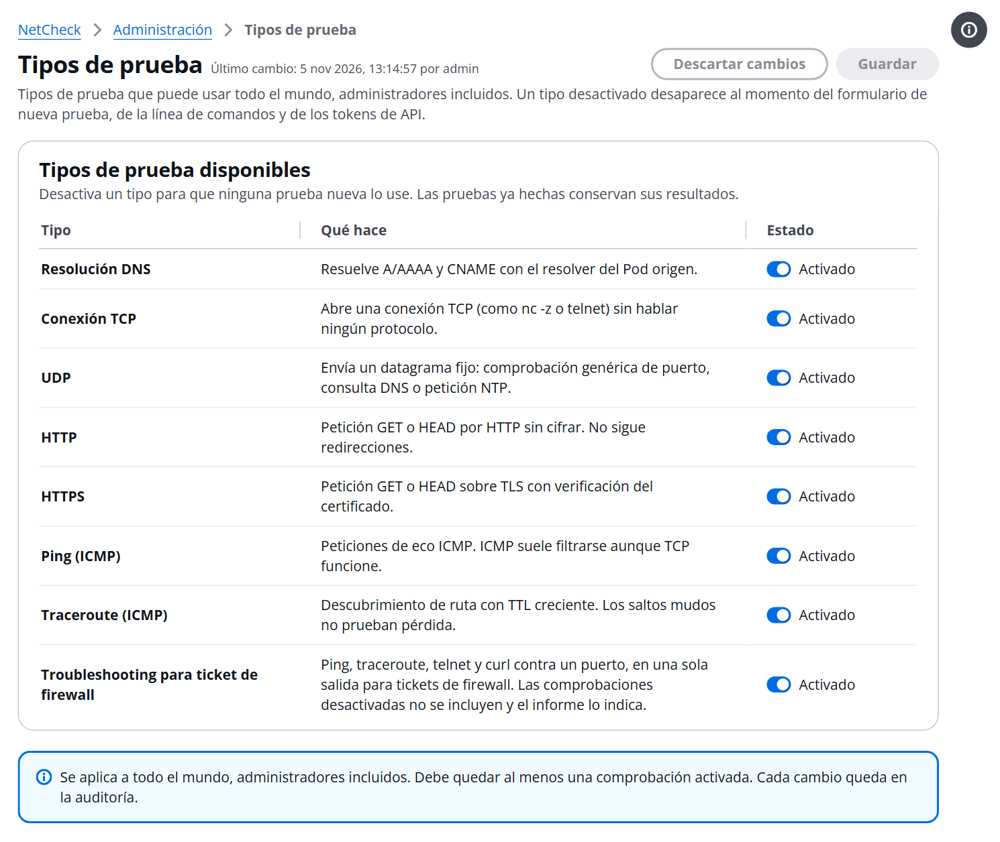
netcheck-cli y los tokens lo rechazan con 403 check_type_disabled; la CLI termina con código 3.Al menos un tipo debe quedar activado. Cada cambio queda en la auditoría. Si la instalación usa
checkTypesManagedBy: helm, la página está en solo lectura.
Las comprobaciones HTTPS verifican los certificados solo contra las autoridades públicas. Un servidor con un certificado de la PKI corporativa, o un firewall que descifra el tráfico TLS por el camino, aparecería como firmado por una autoridad en la que la sonda no confía. Administración › Autoridades de certificación añade autoridades en las que confían todas las comprobaciones HTTPS, además de las públicas, con o sin proxy.
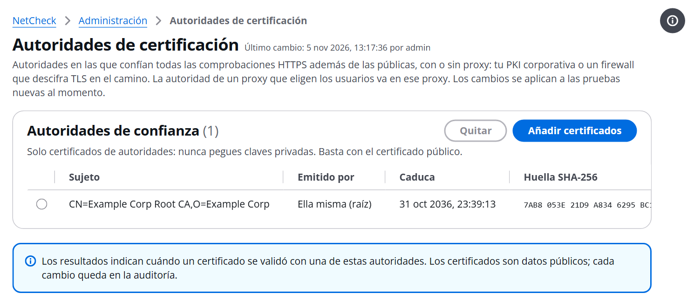
La tabla muestra el sujeto, quién la emitió (Ella misma (raíz) si es raíz), la caducidad (las vencidas se marcan) y la huella SHA-256, para compararla con la que te dé el equipo de PKI.
-----BEGIN CERTIFICATE----- hasta -----END CERTIFICATE-----. Puedes pegar varios: un paquete se separa solo y los duplicados se descartan.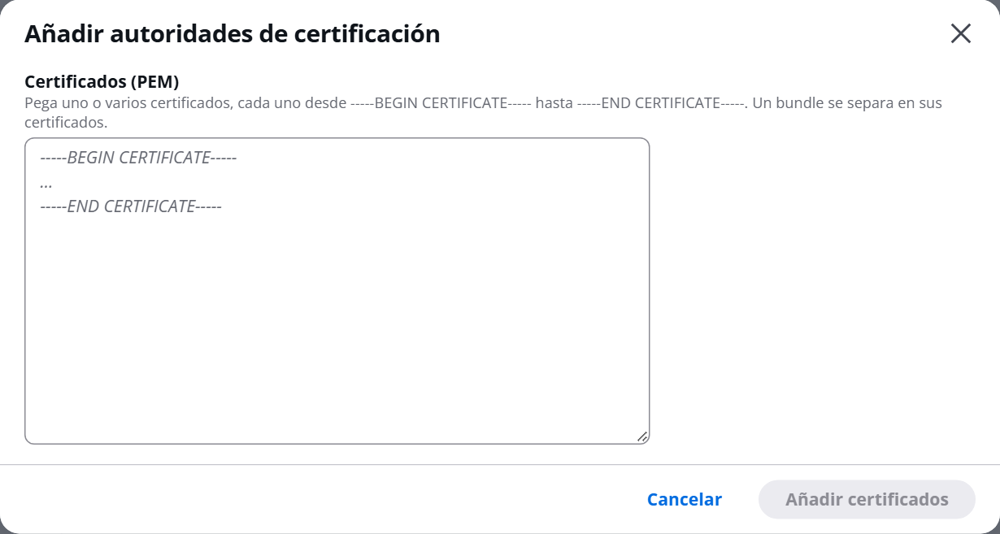
--cacert. Si una web pública como www.google.com aparece validada por tu autoridad corporativa, algo en el camino está inspeccionando TLS.NetCheck confía en autoridades no públicas en dos sitios. Elige según quién emitió el certificado que recibe la comprobación:
| Situación | Dónde va la autoridad | Quién confía en ella |
|---|---|---|
| Tus servidores tienen certificados de la PKI corporativa | Aquí | Todas las comprobaciones HTTPS |
| Un firewall descifra TLS de forma transparente (sin configurar proxy) | Aquí | Todas las comprobaciones HTTPS |
| Un proxy HTTP que inspecciona TLS y que se elige en Conexión (Zscaler, Netskope, Squid…) | En ese proxy (capítulo 21) | Solo las comprobaciones HTTPS a través de ese proxy |
Con trustedCasManagedBy: helm la lista viene de los valores de Helm y la página está en solo lectura.
Cuando tus aplicaciones salen a un destino a través de un proxy corporativo, probar el camino directo responde a la pregunta equivocada. Administración › Proxies configura proxies que los usuarios pueden elegir en TCP, HTTP y HTTPS. Siempre es opcional: por defecto cada comprobación usa el camino directo, y sin proxies la opción ni siquiera aparece.
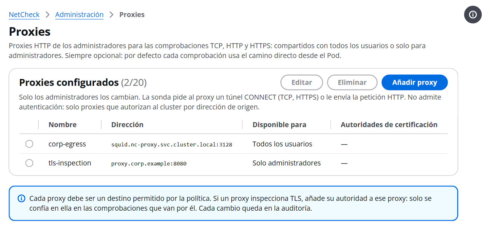
| Proxies compartidos | Proxies personales | |
|---|---|---|
| Dónde | Administración › Proxies | Mis proxies (capítulo 11) |
| Quién los gestiona | Administradores (o un rol con Proxies compartidos) | Solo su dueño |
| Quién los usa | Todos los usuarios, o solo los administradores | Solo su dueño |
| Límite | 20 | 10 por persona |
corp-egress).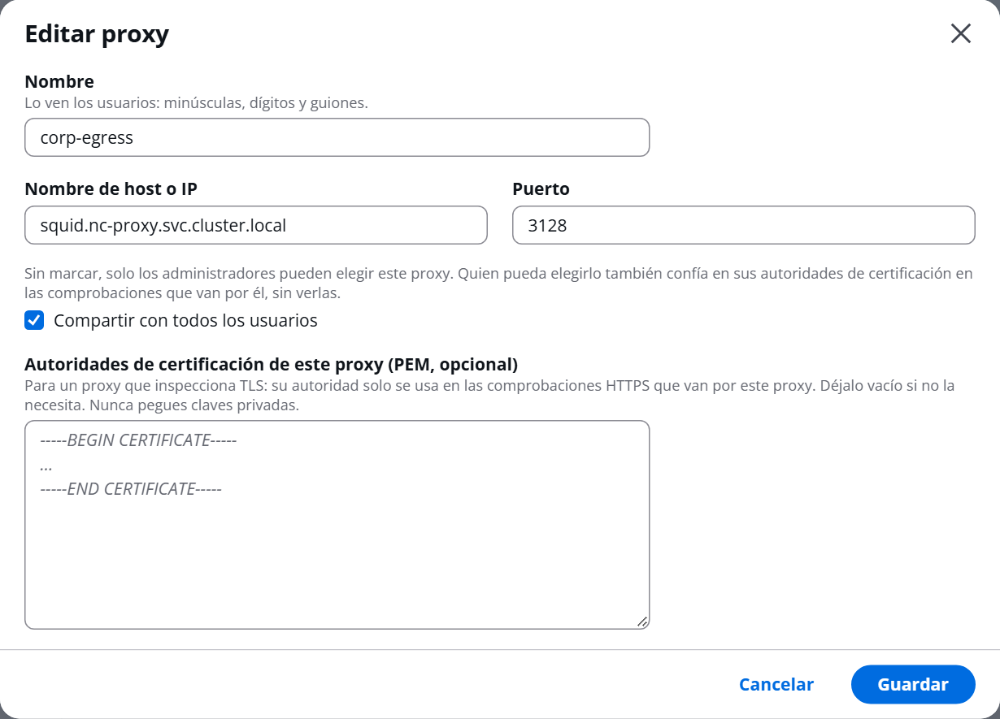
CONNECT hasta el destino (como curl --proxy).curl -x).proxiesManagedBy: helm la página está en solo lectura. Los proxies personales siempre se gestionan en la web.Administración › Retención de datos fija cuánto tiempo guarda NetCheck los datos. Los cambios se aplican en menos de una hora, sin reiniciar nada.
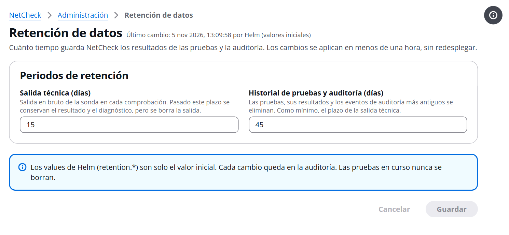
| Ajuste | Qué se borra al pasar el plazo | Por defecto |
|---|---|---|
| Salida técnica (días) | La salida en bruto de cada comprobación. El resultado, el diagnóstico y los tiempos se mantienen. | 15 |
| Historial de pruebas y auditoría (días) | Las pruebas con todos sus resultados y los eventos de auditoría. | 45 |
Las pruebas en cola o en ejecución nunca se borran. Los valores de Helm solo son los iniciales.
Administración › Sesiones activas muestra quién está conectado ahora.
auth.trustedProxyCidrs). Si no, verás la IP del proxy intermedio.Administración › Tokens de API lista los tokens de todos los usuarios: nombre, cómo empieza, propietario, creación, caducidad y último uso.
Selecciona uno y pulsa Revocar cuando ya no se necesite o pueda haberse filtrado. Los pipelines que lo usan fallan en el acto con un error de autenticación. Los tokens caducados se borran solos. Crear y revocar tokens queda en la auditoría.
Administración › Sistema y versiones es una página de consulta:
| Bloque | Qué muestra |
|---|---|
| Versión en ejecución | Versión, commit, fecha de compilación, versión del chart de Helm y las imágenes (con su huella) de NetCheck y de la sonda. |
| Historial de versiones | Cada versión que ha arrancado en esta instalación, con primera vez vista, último arranque y número de arranques. Sirve para saber qué se desplegó y cuándo. |
| Ajustes de la plataforma | Clúster, alcance de namespaces, namespace de NetCheck, comprobaciones por prueba, duración máxima y espera de programación de políticas. Se fijan en Helm. |
| Política de destinos | Resumen de la política y el estado de las protecciones; Editar política abre su página. |
| Retención de datos | Resumen de los plazos; Editar retención abre su página. |
Las actualizaciones no se hacen desde la web: el equipo de plataforma las hace con Helm (capítulo 28). Después, la versión nueva aparece aquí como versión en ejecución.
Estas reglas protegen la instalación y no se pueden desactivar:
Recetas para las tareas más habituales, lo que solo se hace con acceso al clúster, cómo resolver problemas, el glosario y los límites de la aplicación.
Cada receta resume los pasos para una tarea concreta y remite al capítulo donde se explica en detalle.
Detalle en el capítulo 13.
| Lo que ves en Usuarios | Qué hacer |
|---|---|
| Estado Bloqueado | Acciones › Desbloquear, o esperar 15 minutos. |
| Olvidó la contraseña | Acciones › Restablecer contraseña y enviarle la temporal. |
| Estado Deshabilitado | Acciones › Habilitar, si debe volver a tener acceso. |
| Cuenta SSO que no aparece, o mensaje “ninguna regla de acceso…” | Crear una regla de acceso para su grupo o su usuario (capítulo 16). |
| Mensaje “Demasiados intentos” | Esperar un minuto (límite por dirección IP). |
.corp.example.com.Algunas tareas no se hacen desde la web, sino con Helm y kubectl, las herramientas de línea de comandos de Kubernetes. Las hace normalmente el equipo de plataforma, que tiene acceso al clúster. Este capítulo te ayuda a saber qué pedir.
<versión> por la versión de NetCheck que corresponda y
values.yaml por el archivo de configuración de tu instalación. El namespace de NetCheck suele ser netcheck.kubectl -n netcheck get secret netcheck-bootstrap-admin -o jsonpath='{.data.password}' | base64 -d; echo
Es temporal: hay que cambiarla en el primer acceso.
helm upgrade netcheck oci://ghcr.io/hgeorge123/charts/netcheck --version <versión> \ -n netcheck -f values.yaml --wait --timeout 10m
Exclusiones de Helm, límites, nivel de registro, SSO y similares se cambian editando values.yaml y ejecutando
helm upgrade. El Pod se reinicia con la nueva configuración; si algún valor no es válido, no arranca y el registro dice
cuál.
netcheck-data.kubectl -n netcheck scale deploy/netcheck --replicas=0
# hacer la instantánea del volumen
kubectl -n netcheck scale deploy/netcheck --replicas=1
Para restaurar, se crea un volumen a partir de la instantánea, en la misma zona, y se instala indicando
persistence.existingClaim.
Si nadie puede entrar como administrador (contraseña olvidada, cuenta bloqueada o deshabilitada):
# 1. Activar la recuperación: admin vuelve a la contraseña del Secret helm upgrade netcheck oci://ghcr.io/hgeorge123/charts/netcheck --version <versión> -n netcheck -f values.yaml \ --set auth.bootstrapAdmin.recoverOnStart=true --wait kubectl -n netcheck get secret netcheck-bootstrap-admin -o jsonpath='{.data.password}' | base64 -d; echo # 2. Entrar como admin y cambiar la contraseña (obligatorio) # 3. Desactivar la recuperación enseguida helm upgrade netcheck oci://ghcr.io/hgeorge123/charts/netcheck --version <versión> -n netcheck -f values.yaml --wait
La recuperación queda en la auditoría y en el registro del Pod. Solo puede hacerla quien tenga acceso de administración al clúster.
auth.bootstrapAdmin.existingSecret). La guía de instalación explica cómo crearlo.kubectl -n netcheck logs deploy/netcheck.logLevel): debug, info (por defecto), warn o error.helm uninstall netcheck -n netcheck
# Se conservan a propósito (datos y credenciales). Bórralos solo si estás seguro:
kubectl -n netcheck delete pvc netcheck-data
kubectl -n netcheck delete secret netcheck-bootstrap-admin
kubectl delete namespace netcheck
netcheck-data elimina para siempre usuarios, historial y
auditoría.| Síntoma | Causa probable | Qué hacer |
|---|---|---|
| “No permitido por la política de destinos” | Destino protegido (metadatos, API, loopback…) o restringido por la política | El mensaje da el motivo exacto. Revisa Política de destinos y usa Comprobar un destino. |
| Una comprobación no aparece en el formulario | Desactivada en Tipos de prueba o no permitida por el rol en ese namespace | Revisa Tipos de prueba y los Permisos efectivos de la persona. |
Error check_type_disabled o check_not_allowed en la CLI | Lo mismo, desde un pipeline | Igual que el anterior. |
| Un namespace no aparece | No asignado, excluido, del sistema o recién creado | Receta 27.7. |
| El namespace de NetCheck no aparece | Oculto por diseño | Marca la casilla Permitir pruebas en el namespace de NetCheck en esa cuenta. |
| Todas las pruebas terminan en Error de infraestructura | NetCheck no puede hablar con la API de Kubernetes, o hay un problema de permisos | Avisa al equipo de plataforma con el identificador de la prueba. |
| “Namespace … has no room for the probe Pod” (el mensaje llega en inglés) | Una cuota del namespace está llena; el mensaje dice cuál y cuánto falta | El responsable del namespace amplía la cuota. La sonda necesita 50m de CPU y 32Mi de memoria (peticiones), 200m y 64Mi (límites), un Pod y un Job. |
| Ping o traceroute: “ICMP no está permitido dentro de la sonda” | El nodo no admite el ajuste necesario, o una política de admisión externa lo bloquea | Avisa al equipo de plataforma. |
| El ping no responde pero TCP funciona | ICMP filtrado por la red | Es normal. Prueba con TCP o HTTP(S) en el puerto real. |
| Mi aplicación no llega pero NetCheck dice “correcto” | La sonda puede tener reglas distintas a la aplicación | Revisa el aviso de fidelidad y comparte el resultado con el equipo de plataforma. |
| La IP del cliente en Sesiones activas es siempre la misma | La instalación no conoce la red del balanceador | Pedir que se configure auth.trustedProxyCidrs. |
| Muchos “Demasiados intentos” al entrar | Límite por IP; o todo el mundo llega con la misma IP del balanceador | Lo mismo que el anterior. |
| La contraseña inicial de admin no funciona | El Secret cambió después de crearse el admin (habitual con Argo CD) | Recuperar el acceso (28.5) y usar un Secret propio. |
| Síntoma | Causa probable | Primer comando |
|---|---|---|
Pod y volumen en Pending | Sin controlador de almacenamiento o sin permisos | kubectl -n netcheck describe pvc netcheck-data |
Pod en CrashLoopBackOff | Configuración no válida | kubectl -n netcheck logs deploy/netcheck --previous |
Pod en ImagePullBackOff | Los nodos no llegan al registro de imágenes | Revisar la salida a Internet o el espejo de imágenes |
| La web no carga | Problema en la ruta de entrada (HTTPRoute o Ingress) | kubectl -n netcheck describe httproute netcheck o describe ingress netcheck |
| Término | Definición |
|---|---|
| Administrador | Rol de serie con todos los permisos, incluida la gestión de usuarios, grupos, roles y reglas de acceso. |
| API de Kubernetes | El servicio central que controla el clúster. NetCheck lo usa para crear las sondas; las sondas nunca pueden alcanzarlo. |
| Auditoría | Registro de quién hizo qué y cuándo. |
| Autoridad de certificación (CA) | Entidad que firma certificados. NetCheck confía en las públicas y en las que añadas. |
| CIDR | Notación de un rango de IP, como 10.0.0.0/8. |
| Clúster | Conjunto de servidores gestionados por Kubernetes. |
| CNI | El componente de red de Kubernetes que aplica las NetworkPolicies (Calico, Cilium…). |
| Comprobación | Cada una de las pruebas individuales dentro de una prueba (DNS, TCP…). |
| DNS | Sistema que traduce nombres en direcciones IP. |
| Fidelidad | Cuánto se parece el resultado de la sonda al que tendría tu aplicación. |
| Grupo local | Conjunto de cuentas de NetCheck que reciben juntas un rol. |
| Helm | Herramienta para instalar y actualizar aplicaciones en Kubernetes. |
| Huella SHA-256 | Un identificador único de un certificado, para comprobar que es el correcto. |
| ICMP | El protocolo que usan ping y traceroute. |
| Job | Objeto de Kubernetes que ejecuta una tarea hasta terminar. Cada prueba crea uno. |
| Namespace | Espacio separado dentro del clúster, normalmente uno por aplicación o equipo. |
| NetworkPolicy | Regla de red de Kubernetes que limita las conexiones de un namespace. |
| Nodo | Cada servidor del clúster. |
| OIDC | El estándar con el que NetCheck habla con el proveedor de identidad para el SSO. |
| PEM | Formato de texto de un certificado, entre -----BEGIN CERTIFICATE----- y -----END CERTIFICATE-----. |
| PKI corporativa | La infraestructura con la que la empresa emite sus propios certificados. |
| Pod | Unidad mínima de ejecución en Kubernetes. |
| Política de destinos | Lista de nombres, redes y puertos hacia los que se puede probar. |
| Proveedor de identidad | El sistema de cuentas corporativas (Entra ID, Okta, Google, GitHub…). |
| Proxy | Intermediario por el que pasa el tráfico hacia fuera. |
| Regla de acceso | Decide quién entra con SSO y con qué rol y namespaces. |
| Rol | Conjunto de permisos. |
| Service | Nombre estable de Kubernetes para llegar a un grupo de Pods. No responde al ping. |
| SNAT | Traducción de la dirección de origen: hacia fuera, el tráfico suele salir con la IP del nodo. |
| Sonda | Pod temporal que NetCheck crea para medir. |
| SSO | Inicio de sesión único con la cuenta corporativa. |
| TLS | El cifrado de HTTPS. |
| Token de API | Clave para que un programa use NetCheck en nombre de una persona. |
| Usuario (rol) | Rol de serie que lanza pruebas en sus namespaces y ve solo sus pruebas. |
| Concepto | Valor |
|---|---|
| Longitud mínima de la contraseña | 12 caracteres |
| Bloqueo por intentos fallidos | 5 intentos seguidos → 15 minutos (configurable en la instalación) |
| Duración de la sesión | 60 minutos sin actividad; 12 horas como máximo |
| Nombre de usuario | 3–64 caracteres: minúsculas, dígitos, ., _, - |
| Peticiones de ping | 1–10, una por segundo |
| Saltos de traceroute | 1–30 |
| Timeout por comprobación | 5 s por defecto, 10 s como máximo |
| Ticket de firewall | ping -c 4, traceroute de 20 saltos, telnet y curl -v |
| Caducidad de los tokens de API | 30, 90, 180 o 365 días |
| Proxies compartidos | 20 como máximo |
| Proxies personales | 10 por persona |
| Autoridades de certificación | 50 certificados y 64 KiB como máximo |
| Retención de la salida técnica | 15 días por defecto (1–3650) |
| Retención del historial y la auditoría | 45 días por defecto (1–3650) |
| Purga de datos antiguos | Cada hora |
| Aparición de un namespace nuevo | Menos de un minuto |
| Recursos de la sonda | Peticiones 50m CPU / 32Mi memoria; límites 200m / 64Mi; 16Mi de almacenamiento temporal |
Códigos de salida de netcheck-cli | 0 correcto · 1 fallos de conectividad · 2 no se pudo ejecutar · 3 error de uso o de la API |